Women's Health
Chapters
Prepared by
- Dr. Archuthan Nithiyananthan (RHO)
Translated and Proofread by
- Dr. Yasodara Amarasinghe (RHO)
- Dr. Achintha Welivita (RHO)
- Dr. Kasunika Ruwandi Perera (RHO)
- Dr. Thalpe Guruge Madara Malsirini (RHO)
Dedication
To all the women who have stepped into our lives — and in doing so, healed us and blessed us in return.
Acknowledgements
We extend our heartfelt gratitude to our Consultant Physician, Dr. Shamitha Dassanayaka, whose guidance and support made this project possible.
We also thank our clinical team for their steadfast encouragement:
- Dr. Kumudu Kulasekara
- Dr. Jeewashini Rathnayake
- Dr. Jeganthy Eapan
- Dr. Azrah Najimudeen
- Mrs. P. K. K. Manike
- Mrs. N. S. M. P. M. Nanayakkara
- Mrs. Manike
- Ms. Sandamali
- Ms. Lakshika
How this book is used
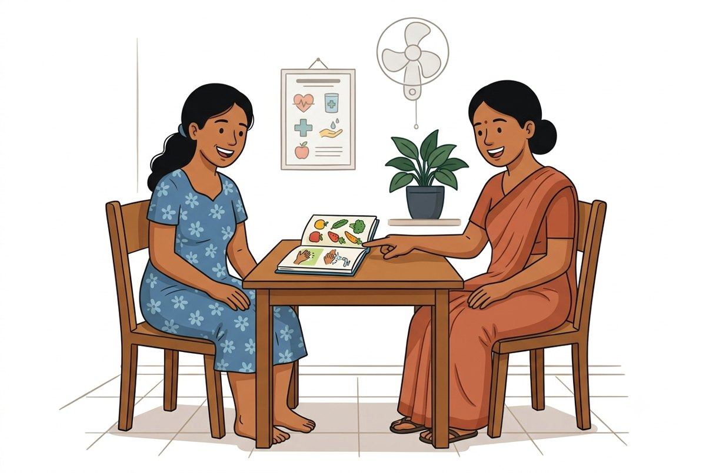
ඉගැන්වීම සඳහා මෙම පොත භාවිතා කරන ආකාරය (හෙදිය සඳහා)
- මෙහි එක් එක් පරිච්ඡේදය රෝගියා සමඟ සාකච්ඡා කරන්න. එවිටම පින්තූර පෙන්වා දෙන්න.
- ප්රායෝගික ක්රියාකාරකම් ඇතුළත් කොටස් ඔබ මුලින් නිරූපණය කර පෙන්වා දී රෝගියාට එය අනුකරණය කරන්න සලස්වන්න (සීනි පරීක්ෂාව, ඉන්හේලරය භාවිතය, ඉන්සියුලින් එන්නත් කිරීම).
- පොතේ පසුපස ඇති නිදර්ශන පිටු පෙන්වන්න. ඇයට ඒවා තමන්ගේම සායන පොතට පිටපත් කරගන්න සලස්වන්න.
- සෑම සායන වාරයකටම තම සායන පොත සහ භාවිතා කරන බෙහෙත් ගෙන එන ලෙස පවසන්න.
இப்புத்தகத்தைப் பயன்படுத்தும் முறை (செவிலியருக்கு)
- ஒரு நேரத்தில் ஒரு பகுதியாக அந்தப் பெண்ணுடன் கலந்துரையாடுங்கள். படங்களைக் காட்டுங்கள்.
- அவரையே செய்து காட்டச் சொல்லுங்கள் (சர்க்கரை பரிசோதனை, இன்ஹேலர் பயன்பாடு, இன்சுலின் எடுத்தல்).
- பின்னால் உள்ள மாதிரிப் பக்கங்களைக் காட்டுங்கள். அவர் அவற்றைத் தமது சொந்த கிளினிக் புத்தகத்தில் பிரதி எடுத்துக்கொள்வார்.
- ஒவ்வொரு கிளினிக் வருகைக்கும் கிளினிக் புத்தகத்தையும் மருந்துகளையும் கொண்டுவரச் சொல்லுங்கள்.
How to use this book
- Go through one block at a time with the woman. Point at the pictures.
- Ask her to show you (test sugar, use the inhaler, draw up insulin).
- Show the sample diary pages at the back. She copies them into her own clinic book.
- Ask her to bring her clinic book and medicines to every visit.
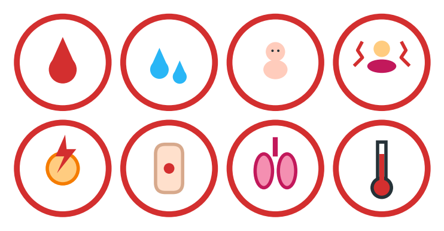
ඕනෑම කාන්තාවක් වහාම රෝහලට පැමිණිය යුතු අවස්ථා
- අධික රුධිර වහනය (පැයක් ඇතුළත පෑඩ් එකක් පෙඟී යන තරම්), ගර්භනී කාලයේ ඕනෑම රුධිර වහනයක්.
- යෝනියෙන් එකවර වතුර වැනි දියරයක් පිටවීම (Water bag එක කැඩීයාම), දරුවාගේ චලන අඩුවීම.
- වලිප්පුව හෝ සිහිසුන් වීම.
- දරුණු හිසේ කැක්කුම, ඇස් ඉදිරිපිට චායාවන්/එලි වැනි යමක් පෙනීම හෝ බොඳවී පෙනීම.
- දරුණු උදරයේ වේදනාව.
- හුස්ම ගැනීමේ අපහසුතාවය, තොල් හෝ නියපොතු නිල් පැහැ වීම.
- අධික උණ, යෝනි මාර්ගයෙන් දුගඳක් සහිත ස්රාවයක් පිටවීම.
- ශල්යකර්මයකින් පසු: තුවාලය විවෘත වීම හෝ සැරව ගලා යාම, උණ, අධික කකුලේ වේදනාව හෝ ඉදිමීම, ක්ෂණික හුස්ම සිරවීම.
உடனடியாக மருத்துவமனைக்கு வாருங்கள் (எல்லாப் பெண்களும்)
- அதிக இரத்தப்போக்கு (ஒரு மணி நேரத்தில் பேட் நனையுமளவு), அல்லது கர்ப்ப காலத்தில் எந்த இரத்தப்போக்கும்.
- பனிக்குடம் உடைதல் அல்லது குழந்தையின் அசைவு மிகவும் குறைதல்.
- வலிப்பு, அல்லது மயங்கி விழுதல்.
- கடுமையான தலைவலி, கண்முன் ஒளிக்கீற்றுகள் அல்லது பார்வை மங்குதல்.
- கடுமையான வயிற்று வலி.
- மூச்சு விடச் சிரமம், அல்லது உதடுகள் நீல நிறமாதல்.
- அதிகக் காய்ச்சல், அல்லது துர்நாற்றமுள்ள வெள்ளைப்படுதல்.
- அறுவைச் சிகிச்சைக்குப் பின்: காயம் திறத்தல் அல்லது சீழ் வடிதல், காய்ச்சல், கால் தசை வலி அல்லது வீக்கம், திடீர் மூச்சுத் திணறல்.
Come to hospital NOW
- Heavy bleeding (soaking a pad in an hour), or any bleeding in pregnancy.
- Water breaking, or the baby moving much less.
- Fit (seizure), or fainting.
- Severe headache, flashing lights or blurred vision.
- Severe belly pain.
- Difficulty breathing, or blue lips.
- High fever, or foul-smelling discharge.
- After an operation: wound opening or leaking pus, fever, calf pain or swelling, sudden breathlessness.
Copyright © 2026 Medical Clinic Patient Education Project. All rights reserved.
No part of this publication may be reproduced, stored, or transmitted in any form without prior written permission, except for brief quotations in reviews or educational handouts.
For patient and community health use.
දියවැඩියාව (සීනි රෝගය) நீரிழிவு (சர்க்கரை நோய்) Chapter 1: Diabetes
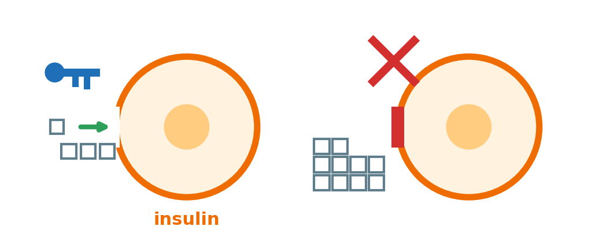
දියවැඩියාව යනු කුමක්ද?
- ශරීරයේ ශක්තිය සඳහා රුධිරයේ ඇති සීනි ශරීර සෛල තුළට යැවීමට ඉන්සියුලින් උපකාරී වේ.
- දියවැඩියාවේදී ශරීරයේ ඉන්සියුලින් හෝමෝනය ප්රමාණවත් නොවේ, නැතහොත් නිසි ලෙස ක්රියා නොකරයි. එමනිසා රුධිරයේ සීනි ඉහළ මට්ටමක පවතී.
- ගර්භනී කාන්තාවන්ගේ:
- ගර්භණීභාවයට පෙර සිට ඇති දියවැඩියාව (Type 1 and Type 2).
- ගර්භනී සමයේ දියවැඩියාව (GDM) - ගර්භණීභාවයේදී ආරම්භ වී සාමාන්යයෙන් ප්රසූතියෙන් පසු සුව වේ.
- ගර්භනී නොවන කාන්තාවන්ගේදී: බොහෝවිට Type 2 දියවැඩියාව.
- දකුණු ආසියාතික කාන්තාවන් අතර දියවැඩියාව සුලභ බැවින්, ශ්රී ලංකාවේ සියලුම ගර්භනී කාන්තාවන් දියවැඩියාවට පරීක්ෂා කරනු ලැබේ.
நீரிழிவு என்றால் என்ன?
- இரத்தத்தில் உள்ள சர்க்கரையை சக்திக்காக உடற்கலங்களுக்குள் அனுப்ப இன்சுலின் உதவுகிறது.
- நீரிழிவில் இன்சுலின் போதுமானதாக இல்லை, அல்லது சரியாக வேலை செய்யாது. இரத்தத்தில் சர்க்கரை அதிகமாக இருக்கும்.
- கர்ப்பிணிகளில்:
- கர்ப்பத்திற்கு முன்பிருந்தே உள்ள நீரிழிவு (வகை 1 அல்லது வகை 2).
- கர்ப்பகால நீரிழிவு (GDM) - கர்ப்பத்தின்போது தொடங்கி, பொதுவாகப் பிரசவத்திற்குப் பின் சரியாகிவிடும்.
- கர்ப்பமில்லாத பெண்களில்: பெரும்பாலும் வகை 2 நீரிழிவு.
- தென்னாசியப் பெண்களுக்கு நீரிழிவு அதிகமாக வருவதால், இலங்கையில் எல்லாக் கர்ப்பிணிகளுக்கும் பரிசோதனை செய்யப்படுகிறது.
What is diabetes?
- Your body uses insulin to move sugar from the blood into the body for energy.
- In diabetes there is too little insulin, or it does not work well. Sugar stays high in the blood.
- In women who are pregnant:
- Diabetes before pregnancy (Type 1 or Type 2).
- Gestational diabetes (GDM), which starts in pregnancy and usually goes after delivery.
- In women who are not pregnant: mostly Type 2 diabetes.
- All pregnant women in Sri Lanka are tested, because diabetes is common in South Asian women.
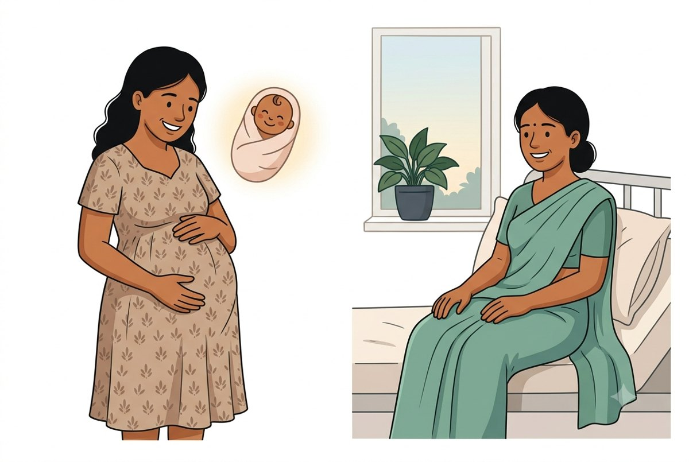
රුධිරයේ සීනි පාලනය කළ යුත්තේ ඇයි?
| රුධිරයේ සීනි ඉහළ ගියහොත් | ප්රතිඵල |
|---|---|
| ගැබිණි සමයේ | දරුවාගේ බර වැඩිවීම, ප්රසූතිය අපහසු වීම, උපතින් පසු දරුවාගේ සීනි අඩු වීම, අධි රුධිර පීඩනය, ආසාදන, සිසේරියන් සැත්කම් වැඩි වීම |
| ගර්භනී නොවන කාන්තාවන් සඳහා | ශල්යකර්මයෙන් පසු තුවාලය සුවවීම ප්රමාද වීම, ගර්භාෂ ආසාදන, යීස්ට් (කැසීම සහිත සුදු ස්රාවය), මුත්රා ආසාදන, ඇස්, වකුගඩු, ස්නායු සහ හදවත් රෝග |
- හොඳින් පාලනය කළ විට සෞඛ්ය සම්පන්න දරුවන් ලැබේ. ආරක්ෂිත ලෙස ශල්යකර්ම කරගැනීමට හැකි වේ.
சர்க்கரையை ஏன் கட்டுப்படுத்த வேண்டும்?
| சர்க்கரை அதிகமாக இருந்தால் | ஏற்படக்கூடியவை |
|---|---|
| கர்ப்பிணி | குழந்தை பெரிதாதல், கடினமான பிரசவம், பிறந்த பின் குழந்தையின் சர்க்கரை குறைதல், உயர் இரத்த அழுத்தம், தொற்றுகள், அதிக சிசேரியன் |
| கர்ப்பமில்லாதவர் | அறுவைச் சிகிச்சைக்குப் பின் காயம் ஆறத் தாமதம், காயம் மற்றும் கருப்பைத் தொற்றுகள், பூஞ்சைத் தொற்று (அரிப்புடன் வெள்ளைப்படுதல்), சிறுநீர்த் தொற்றுகள், கண், சிறுநீரகம், நரம்பு மற்றும் இதய நோய்கள் |
- நன்கு கட்டுப்படுத்தினால் ஆரோக்கியமான குழந்தைகளும் பாதுகாப்பான அறுவைச் சிகிச்சைகளும் கிடைக்கும்.
Why keep sugar under control?
| If sugar stays high | What can happen |
|---|---|
| Pregnant | Big baby, difficult birth, baby's sugar low after birth, high BP, infections, more Caesareans |
| Not pregnant | Slow healing after operations, wound and womb infections, thrush, urine infections, eye, kidney, nerve and heart problems |
- Good control means healthy babies and safe operations.
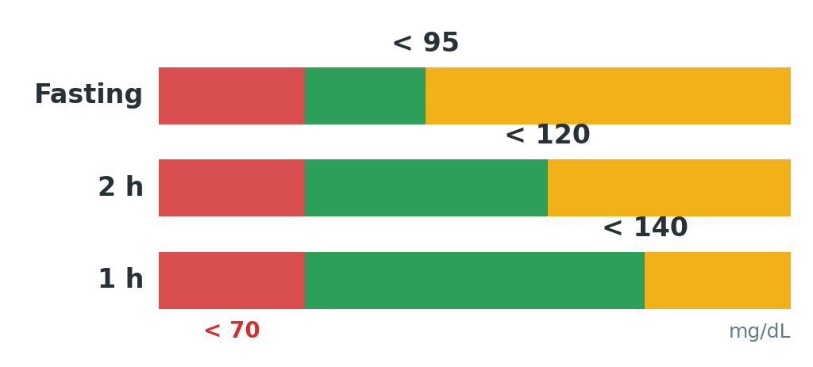
ඔබේ සීනි අගයන්ගේ ඉලක්ක
| වේලාව | ගර්භනී (mg/dL) | ගර්භනී නොවන |
|---|---|---|
| නිරාහාරව (උදේ ආහාරයට පෙර) | 95 ට අඩු | මෙහි ලියන්න: ____ [CHECK] |
| ආහාරය ආරම්භ කර පැය 1 කට පසු | 140 ට අඩු | |
| ආහාරය ආරම්භ කර පැය 2 කට පසු | 120 ට අඩු | මෙහි ලියන්න: ____ |
- 70 ට අඩු වීම ඉතා පහළ මට්ටමකි. D-16 බලන්න.
உங்கள் சர்க்கரை இலக்குகள்
| நேரம் | கர்ப்பிணி (mg/dL) | கர்ப்பமில்லாதவர் |
|---|---|---|
| வெறும் வயிற்றில் (காலை உணவுக்கு முன்) | 95 க்குக் குறைவு | உங்கள் மருத்துவர் எழுதுவார்: ____ [CHECK] |
| உணவு தொடங்கி 1 மணி நேரத்திற்குப் பின் | 140 க்குக் குறைவு | |
| உணவு தொடங்கி 2 மணி நேரத்திற்குப் பின் | 120 க்குக் குறைவு | உங்கள் மருத்துவர் எழுதுவார்: ____ |
- 70 க்குக் குறைவது மிகவும் குறைந்த அளவு. D-16 ஐப் பார்க்கவும்.
Your sugar targets
| When | Pregnant (mg/dL) | Not pregnant |
|---|---|---|
| Fasting (before breakfast) | under 95 | Your doctor writes: ____ CHECK |
| 1 hour after starting a meal | under 140 | |
| 2 hours after starting a meal | under 120 | Your doctor writes: ____ |
- Under 70 is too low. See D-16.
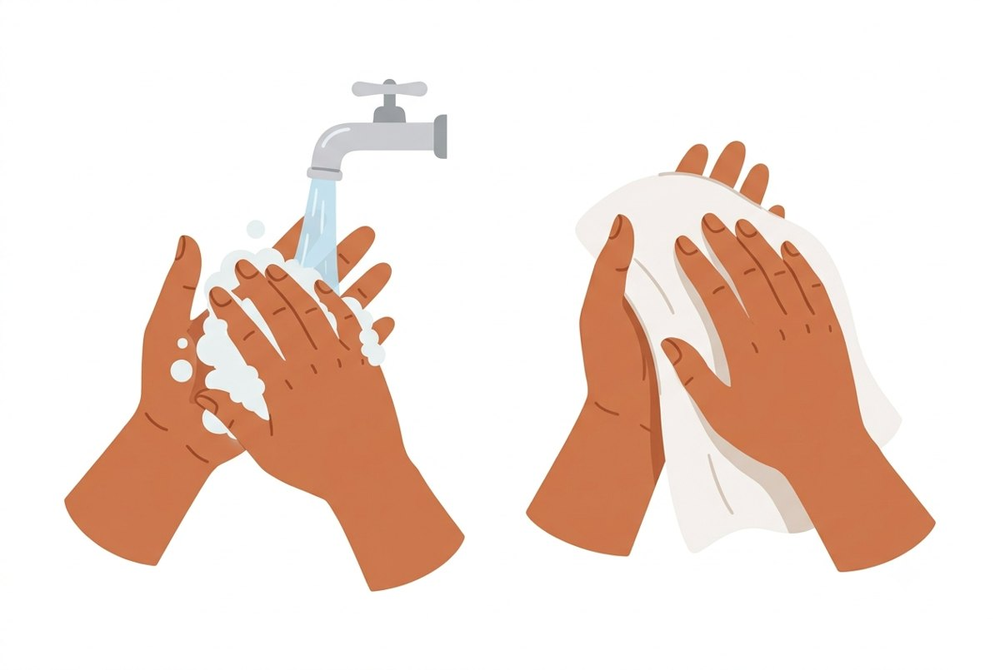
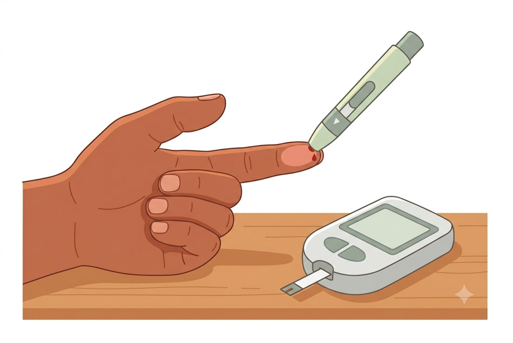
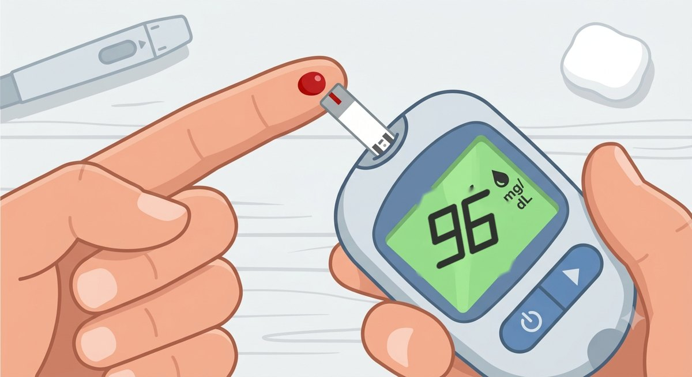
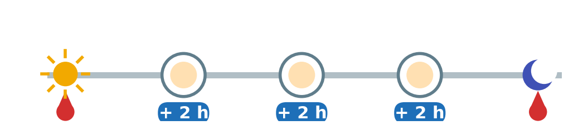
නිවසේදී සීනි පරීක්ෂා කිරීම
- සබන් සහ උණු වතුරෙන් අත් සෝදා හොඳින් වියළන්න.
- මීටරයට අලුත් ස්ට්රිප් එකක් දමන්න.
- අලුත් ලැන්සෙට් එකකින් ඇඟිල්ලේ එක පැත්තකට අනින්න. සෑම වතාවකම වෙනත් ඇඟිල්ලක් භාවිතා කරන්න.
- ලේ බිංදුව ස්ට්රිප් එකට ස්පර්ශ කරන්න.
- ප්රතිඵලය සහ වේලාව ලියා තබන්න.
- ලැන්සෙට් එක තියුණු දේ දමන බෝතලයට දමන්න.
- ගර්භනී නම්: නිරාහාරව, සහ උදේ, දහවල් සහ රාත්රී වේල් ආහාර ගැනීම ආරම්භ කළ වේලෙන් සිට පැය 2 කට පසු. ඉන්සියුලින් ගන්නේ නම් නිදාගැනීමට පෙරද.
- ගර්භනී නොවන: ඔබේ වෛද්යවරයා පවසන පරිදි.
- සෑම පැමිණීමකටම ඔබේ සටහන් පොත හෝ සායන පොත ගෙන එන්න.
வீட்டில் சர்க்கரை பரிசோதனை
- சோப்பு மற்றும் வெதுவெதுப்பான நீரால் கைகளைக் கழுவி நன்கு உலர்த்தவும்.
- மீட்டரில் புதிய ஸ்டிரிப் செருகவும்.
- புதிய லான்செட்டால் விரல் நுனியின் பக்கத்தில் குத்தவும். ஒவ்வொரு முறையும் வேறு விரலைப் பயன்படுத்தவும்.
- இரத்தத் துளியை ஸ்டிரிப்பில் தொடவும்.
- முடிவையும் நேரத்தையும் எழுதி வைக்கவும்.
- லான்செட்டை கூரான பொருட்களுக்கான போத்தலில் போடவும்.
- எப்போது (கர்ப்பிணி): வெறும் வயிற்றில், மேலும் காலை, மதியம், இரவு உணவின் முதல் கவளத்திலிருந்து 2 மணி நேரத்திற்குப் பின். இன்சுலின் எடுப்பவர்கள் படுக்கைக்கு முன்பும் செய்யவும்.
- எப்போது (கர்ப்பமில்லாதவர்): உங்கள் மருத்துவர் கூறுவதுபோல்.
- ஒவ்வொரு வருகைக்கும் உங்கள் குறிப்பேட்டையோ கிளினிக் புத்தகத்தையோ கொண்டுவாருங்கள்.
Testing your sugar at home
- Wash hands with soap and warm water. Dry well.
- Put a new strip in the meter.
- Prick the side of your fingertip with a new lancet. Use a different finger each time.
- Touch the blood drop to the strip.
- Write down the result and the time.
- Lancet into your sharps bottle.
- When (pregnant): fasting, and 2 hours after the first bite of breakfast, lunch and dinner. Bedtime too if on insulin.
- When (not pregnant): as your doctor says.
- Bring your diary or clinic book to every visit.

දියවැඩියාව සමඟ නිවැරදි ආහාර රටාව
- පිඟානෙන් භාගයක්: එළවළු සහ කොළ වර්ග (මැල්ලුම්, බෝංචි, වම්බටු, බණ්ඩක්කා, ගෝවා, පතෝල (දඬු ලබු)).
- හතරෙන් එකක්: රතු හෝ පාබොයිල් බත් (වඩාත් සුදුසුයි) හෝ වෙනත් සම්පූර්ණ ධාන්ය වර්ග. ඉඳි ආප්ප, ආප්ප, පිට්ටු, නූඩ්ල්ස් සහ පාන්: ස්වල්ප වශයෙන් පමණි. කෝප්පයකින් මැනගන්න.
- හතරෙන් එකක්: ප්රෝටීන් (මාළු, බිත්තර, හම් නැති කුකුළු මස්, පරිප්පු, කඩල, මුං ඇට).
- තෙල් හෝ පොල් ස්වල්පයක්. දිනකට වතුර වීදුරු 6-8 ක් (මිලි ලීටර් 200 වීදුරු).
- ආහාර වේල් 3ක් සහ අමතර වේල් 2ක්, සෑම දිනකම එකම වේලාවලට ගන්න. ආහාර වේල් මඟ නොහරින්න. බඩගින්නේ නොසිටින්න.
- කිරි: දිනකට අඩු මේද හෝ මේද රහිත කිරි වීදුරු 1-2 ක්.
- ගර්භනී: රාත්රී ආහාරයත් උදේ ආහාරයත් අතර පැය 10-12 ට වැඩි නොවිය යුතුය.
நீரிழிவுடன் ஆரோக்கியமான உணவு
- தட்டில் பாதி: காய்கறிகள் மற்றும் கீரை வகைகள் (மல்லும், பீன்ஸ், கத்தரிக்காய், வெண்டைக்காய், முட்டைக்கோஸ், புடலங்காய்).
- கால் பங்கு: சிவப்பரிசி அல்லது பாபாய்ல்டு அரிசிச் சோறு (சிறந்தது) அல்லது வேறு முழுத்தானிய உணவு. இடியாப்பம், ஆப்பம், பிட்டு, நூடுல்ஸ், பாண்: சிறிதளவு மட்டும். கோப்பையால் அளந்து எடுக்கவும்.
- கால் பங்கு: புரதம் (மீன், முட்டை, தோலில்லா கோழி, பருப்பு, கொண்டைக்கடலை, பாசிப்பயறு).
- சிறிதளவு எண்ணெய் அல்லது தேங்காய். நாளொன்றுக்கு 6-8 குவளை தண்ணீர் (200 மி.லி. குவளைகள்).
- 3 வேளை உணவும் 2 சிற்றுண்டியும், தினமும் ஒரே நேரங்களில். உணவை விட்டுவிடாதீர்கள். பட்டினி கிடக்காதீர்கள்.
- பால்: நாளொன்றுக்கு குறைந்த கொழுப்பு அல்லது கொழுப்பில்லாத பால் 1-2 குவளை.
- கர்ப்பிணி: இரவு உணவுக்கும் காலை உணவுக்கும் இடையே 10-12 மணி நேரத்திற்கு மேல் இடைவெளி கூடாது.
Eating well with diabetes
- Half the plate: vegetables and leaves (mallum, beans, brinjal, ladies fingers, cabbage, pathola (snake gourd)).
- One quarter: red or parboiled rice (best) or other whole grains. String hoppers, hoppers, pittu, noodles and bread: small amounts only. Measure with a cup.
- One quarter: protein (fish, egg, skinless chicken, dhal, chick peas, green gram).
- Little oil or coconut. 6-8 glasses of water a day (200 ml glasses).
- 3 meals and 2 snacks, at the same times daily. Do not skip meals. Do not starve.
- Pregnant: no more than 10-12 hours between dinner and breakfast.
- Milk: 1-2 glasses of low-fat or non-fat milk a day.
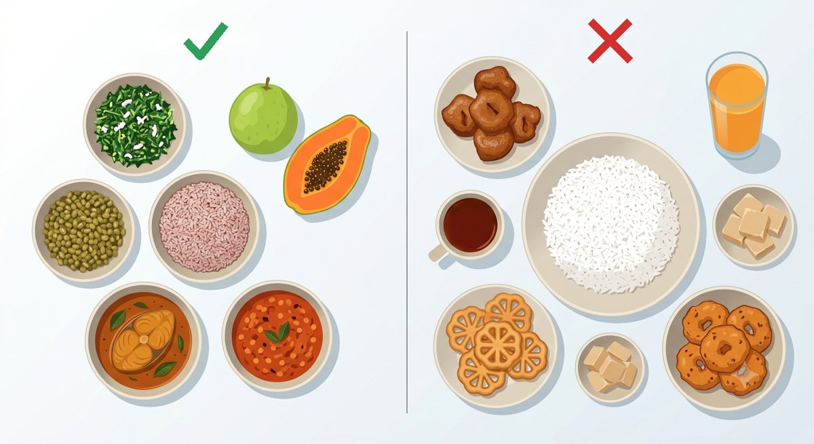
තෝරාගත යුතු සහ සීමා කළ යුතු ආහාර
| තෝරාගන්න | සීමා කරන්න හෝ වළක්වන්න |
|---|---|
| රතු බත් හෝ පාබොයිල් බත් - කුඩා ප්රමාණයෙන්; තම්බාගත් මුං ඇට, කව්පි, කඩල | සුදු බත්, පාන්, නූඩ්ල්ස් විශාල ප්රමාණයෙන්; ඉඳි ආප්ප, ආප්ප, පිට්ටු; කුරක්කන් රොටී සහ තලප |
| කොළ වර්ග සහ එළවළු | සීනි, හකුරු, කිතුල් පැණි, මී පැණි |
| මාළු, බිත්තර, හම් නැති කුකුළු මස්, පරිප්පු | රසකැවිලි, කේක්, බිස්කට්, කැවුම්, කොකිස්; සතියකට වරකට වඩා රතු මස්; කුකුළු මස් හම; බටර්, මාගරින් |
| මධ්යම ප්රමාණයේ සම්පූර්ණ පලතුරු, දිනකට කොටස් 2-3 කට බෙදා (හෝ ආහාර වේලකදී කෝප්පයක් භාගයක්) (පේර, දොඩම්, ඇපල්, පැපොල් පෙති ලෙස) | පලතුරු යුෂ, බෝතල් බීම, සීනි දැමූ තේ; අඹ, රට ඉඳි, මුද්දරප්පලම්, කොමඩු (ස්වල්ප වශයෙන්); වියළි හෝ ටින් කළ පලතුරු |
| අඩු මේද හෝ මේද රහිත කිරි, දිනකට වීදුරු 1-2 ක් | පූර්ණ මේද කිරි, ක්රීම්, සීනි දැමූ කිරි හෝ යෝගට් |
| සීනි නැති ත්රීපෝෂ | බැදපු කෑම |
- "දියවැඩියා රෝගීන් සඳහා" යැයි කියන රසකැවිලිවලද සීනි ඉහළ නංවයි. ස්වල්ප වශයෙන් පමණක් අනුභව කරන්න.
- ලුණු: ආහාර පිසීමේදී ඇතුළුව ලුණු අඩුවෙන් භාවිතා කරන්න (H-06 බලන්න).
- ආගමික වතාවන් හේතුවෙන් උපවාස කරන්නේ නම්: පළමුව ඔබේ වෛද්යවරයා සමඟ කතා කර උපදෙස් ලබා ගන්න
தேர்ந்தெடுக்க வேண்டியவை, குறைக்க வேண்டியவை
| தேர்ந்தெடுங்கள் | குறையுங்கள் அல்லது தவிர்க்கவும் |
|---|---|
| சிவப்பரிசி அல்லது பாபாய்ல்டு அரிசிச் சோறு - சிறிய அளவில்; அவித்த பாசிப்பயறு, காராமணி, கொண்டைக்கடலை | வெள்ளைச் சோறு, பாண், நூடில்ஸ் பெரிய அளவில்; இடியாப்பம், ஆப்பம், பிட்டு; குருக்கன் ரொட்டி, தலப்பா |
| கீரை வகைகள், காய்கறிகள் | சீனி, வெல்லம், பனங்கருப்பட்டி, தேன் |
| மீன், முட்டை, தோலில்லா கோழி, பருப்பு | இனிப்புகள், கேக், பிஸ்கட், கவுன், கொகிஸ்; வாரத்திற்கு ஒரு முறைக்கு மேல் சிவப்பு இறைச்சி; கோழித் தோல்; வெண்ணெய், மார்கரின் |
| நடுத்தர அளவு முழுப் பழங்கள், நாளொன்றுக்கு 2-3 பங்களாகப் பிரித்து (அல்லது ஒரு வேளைக்கு அரைக் கோப்பை) (கொய்யா, ஆரஞ்சு, ஆப்பிள், பப்பாளி பட்டையாக) | பழச்சாறு, போத்தல் குளிர்பானம், சீனி போட்ட தேநீர்; மா, திராட்சை, ரெய்சின், தர்பூசணி (சிறிதளவு); உலர்ந்த அல்லது டின் பழங்கள் |
| குறைந்த கொழுப்பு அல்லது கொழுப்பில்லாத பால், நாளொன்றுக்கு 1-2 குவளை | முழுக் கொழுப்புப் பால், கிரீம், சர்க்கரை சேர்த்த பால் அல்லது தயிர் |
| சீனி இல்லாத திரிபோஷா | பொரித்த உணவுகள் |
- "நீரிழிவுக்கானது" என்று சொல்லப்படும் இனிப்புகளும் சர்க்கரையை உயர்த்தும். சிறிதளவு மட்டுமே எடுக்கவும்
- உப்பு: சமையலில் உட்பட குறைவான உப்பு பயன்படுத்துங்கள் (H-06 ஐப் பார்க்கவும்).
- மத நோன்பு இருந்தால், முதலில் உங்கள் மருத்துவரிடம் கலந்துபேசுங்கள்.
Choose and limit
| Choose | Limit or avoid |
|---|---|
| Red rice or parboiled rice, small portions; boiled green gram, cowpea, chick peas | Big portions of white rice, bread, noodles; hoppers, string hoppers, pittu; kurakkan roti and thalapa |
| Green leaves and vegetables | Sugar, jaggery, treacle, honey |
| Fish, egg, skinless chicken, dhal | Sweets, cake, biscuits, kavum, kokis; red meat more than once a week; chicken skin; butter, margarine |
| Medium whole fruit, 2-3 portions a day spread out (or half a cup at a meal) (guava, orange, apple, papaw in slices) | Fruit juice, soft drinks, sweet tea; mango, dates, raisins, watermelon, pineapple (small amounts); dried or canned fruit |
| Thriposha without sugar | Fried snacks |
| Low-fat or non-fat milk, 1-2 glasses a day | Full-cream milk, cream, sweetened milk or yoghurt. |
- "Diabetic" sweets still raise sugar. Small amounts only.
- Salt: use less salt, including in cooking (see H-06).
- Fasting for religious reasons: talk to your doctor first.
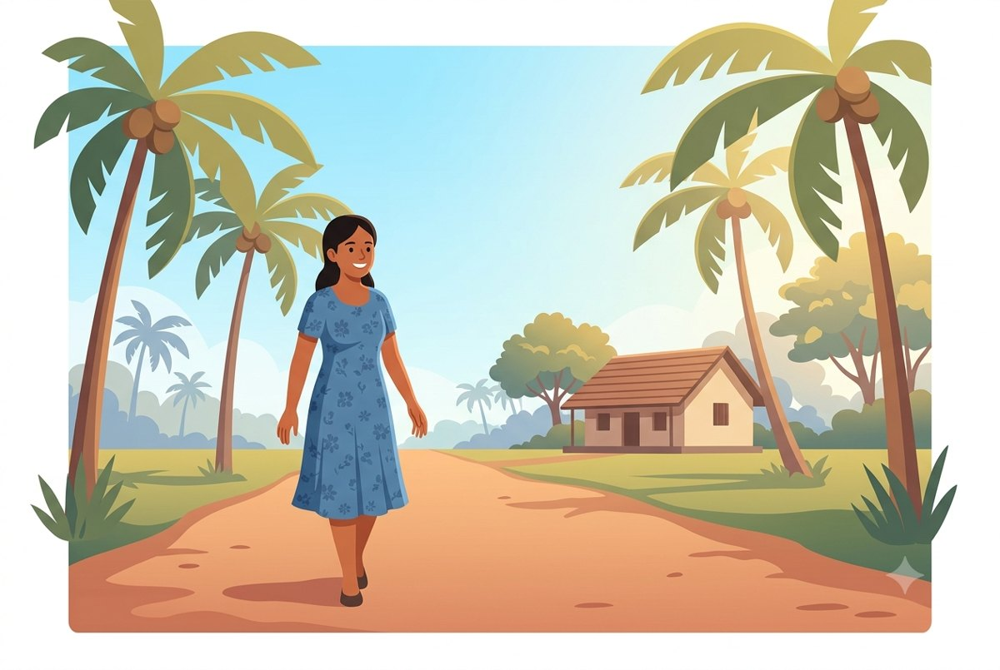
ක්රියාශීලීව සිටින්න
- සෑම ආහාර වේලකින් පසුවම මිනිත්තු 10 ක් ඇවිදින්න, හෝ දිනකට මිනිත්තු 30 ක් ඇවිදින්න.
- ගර්භනී කාලයේදී, රුධිර වහනය, කරකැවිල්ල, පපුවේ වේදනාව, ගැබ් හැකිලීම හෝ දරුවාගේ චලනය අඩුවීම තිබේ නම් ව්යායාම නවතා වහාම ඔබේ වෛද්යවරයාට දන්වන්න.
- ඉන්සියුලින් ගන්නේ නම්, හිස් බඩින් ව්යායාම නොකරන්න.
சுறுசுறுப்பாக இருங்கள்
- ஒவ்வொரு உணவுக்குப் பின்னும் 10 நிமிடம் நடக்கவும், அல்லது நாளொன்றுக்கு 30 நிமிடம் நடக்கவும்.
- கர்ப்ப காலத்தில், இரத்தப்போக்கு, தலைச்சுற்றல், நெஞ்சு வலி, கருப்பை சுருக்கங்கள் அல்லது குழந்தையின் அசைவு குறைதல் இருந்தால் நிறுத்திவிட்டு உங்கள் மருத்துவரிடம் தெரிவியுங்கள்.
- இன்சுலின் எடுத்தால், வெறும் வயிற்றில் உடற்பயிற்சி செய்ய வேண்டாம்.
Be active
- Walk 10 minutes after each meal, or 30 minutes a day.
- In pregnancy, stop and tell your doctor if you have bleeding, dizziness, chest pain, contractions or the baby moves less.
- If you use insulin, do not exercise on an empty stomach.
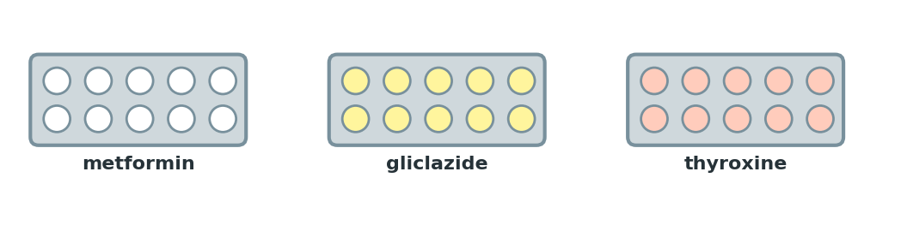
දියවැඩියා සඳහා බෙහෙත්
- ගර්භනී නොවන: ටැබ්ලට් (උදා: මෙට්ෆෝමින්) සහ සමහර විට ඉන්සියුලින්, උපදෙස් ලද පරිදි ආහාර සමඟ ගන්න. ඔබට කැමති පරිදි නවත්වන්නට හෝ වෙනස් කරන්නට එපා.
- ගර්භනී: බොහෝ කාන්තාවන් ආහාර පාලනයෙන්, අවශ්ය නම් ඉන්සියුලින්වලින් පාලනය වේ. සමහරුන් මෙට්ෆෝමින් ගනී.
- ඉන්සියුලින් දරුවාට ආරක්ෂිතයි. එයට ඇබ්බැහි වීමක් නොවේ.
- සමහර දියවැඩියා ටැබ්ලට් ගර්භණීභාවයේදී ආරක්ෂිත නොවේ (උදා: ග්ලයික්ලසයිඩ්). ගැබ් ගැනීමට සැලසුම් කරන්නේ නම් ඔබේ වෛද්යවරයාට මේ බව කියන්න.
- ශල්යකර්මයකට පෙර, ඔබට දියවැඩියාව ඇති බව, ඔබව ශල්යකර්මයට පෙර පරීක්ෂා කරන සියලු වෛද්යවරුන්ට කියන්න. ඔබේ සටහන් පොත ගෙන එන්න.
நீரிழிவுக்கான மருந்துகள்
- கர்ப்பமில்லாதவர்: மாத்திரைகள் (எ.கா. மெட்ஃபோர்மின்) மற்றும் சிலருக்கு இன்சுலின். அறிவுறுத்தியபடி உணவுடன் எடுக்கவும். நீங்களாகவே நிறுத்தவோ மாற்றவோ வேண்டாம்.
- கர்ப்பிணி: பெரும்பாலான பெண்களுக்கு உணவுக் கட்டுப்பாடு, தேவைப்பட்டால் இன்சுலின். சிலர் மெட்ஃபோர்மின் எடுப்பார்கள்.
- இன்சுலின் குழந்தைக்குப் பாதுகாப்பானது. அது போதை பழக்கமாகிவிடாது.
- சில நீரிழிவு மாத்திரைகள் கர்ப்பத்தில் பாதுகாப்பற்றவை (எ.கா. கிளிக்ளசைட்). கர்ப்பமாகத் திட்டமிட்டால் உங்கள் மருத்துவரிடம் தெரிவியுங்கள்.
- அறுவைச் சிகிச்சைக்கு முன், உங்களைக் கவனிப்பவர்கள் எல்லோரிடமும் உங்களுக்கு நீரிழிவு இருப்பதைத் தெரிவித்து, உங்கள் குறிப்பேட்டைக் கொண்டுவாருங்கள்.
Medicines for diabetes
- Not pregnant: tablets (for example metformin) and sometimes insulin. Take with food as advised. Do not stop or change on your own.
- Pregnant: most women use diet, and insulin if needed. Some use metformin.
- Insulin is safe for the baby. It is not addictive.
- Some diabetes tablets are not safe in pregnancy (for example gliclazide). If you are planning pregnancy, tell your doctor.
- Before an operation, tell the team you have diabetes and bring your diary.
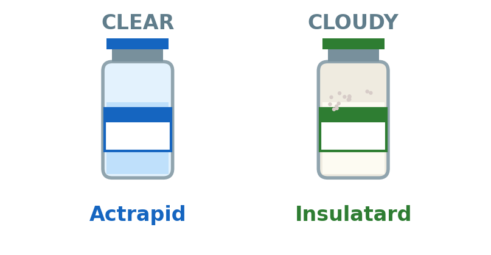
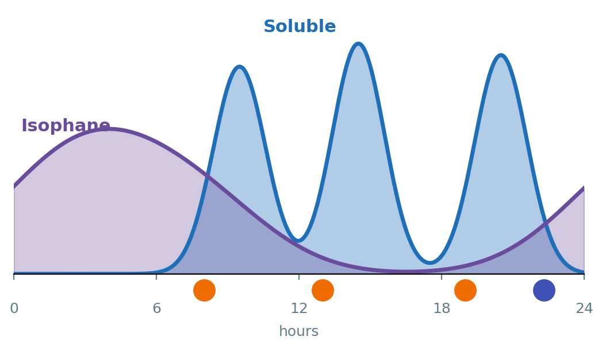
භාවිතා කරන ඉන්සියුලින් වර්ග දෙක (ඉන්සියුලින් භාවිතා කරන්නන් සඳහා)
| දිය වන (Actrapid) | අයිසොෆේන් (Insulatard) [CHECK: වෙළඳ නාමය] | |
|---|---|---|
| පෙනුම | ජලය මෙන් පැහැදිලියි | රෝල් කළ පසු කිරි පැහැයි (බොඳ) |
| ගතයුත්තේ | ආහාරවලට පෙර | සාමාන්යයෙන් නිදාගැනීමට පෙර |
| ක්රියා කිරීම ආරම්භ වේ | මිනිත්තු 30 ක් පමණ | හෙමින් |
| අවදානම | ආහාරය ප්රමාද වුවහොත් සීනි අඩු වීම | රාත්රියේ සීනි අඩු වීම |
- දෙක කිසිවිටෙක පටලවා නොගන්න. සෑම වතාවකම ලේබලය කියවන්න.
பயன்படுத்தும் இரண்டு இன்சுலின் வகைகள் (இன்சுலின் எடுப்பவர்களுக்கு)
| கரையும் -soluble (Actrapid) | ஐசோஃபேன் (Insulatard) [CHECK: வணிகப் பெயர்] | |
|---|---|---|
| தோற்றம் | தண்ணீர் போலத் தெளிவானது | உருட்டிய பின் பால் போல் கலங்கலானது |
| எப்போது | உணவுக்கு முன் | பொதுவாக படுக்கைக்கு முன் |
| வேலை செய்யத் தொடங்குவது | சுமார் 30 நிமிடத்தில் | மெதுவாக |
| ஆபத்து | உணவு தாமதமானால் சர்க்கரை குறைதல் | இரவில் சர்க்கரை குறைதல் |
- இரண்டையும் ஒருபோதும் மாற்றிக் குழப்பிக்கொள்ளாதீர்கள். ஒவ்வொரு முறையும் லேபிளைப் படியுங்கள்.
The two insulins used here
| Soluble (Actrapid) | Isophane (Insulatard) CHECK brand | |
|---|---|---|
| Look | Clear like water | Cloudy after rolling |
| When | Before meals | Usually at bedtime |
| Starts | About 30 minutes | Slowly |
| Risk | Low sugar if the meal is late | Low sugar in the night |
- Never mix them up. Read the label every time.
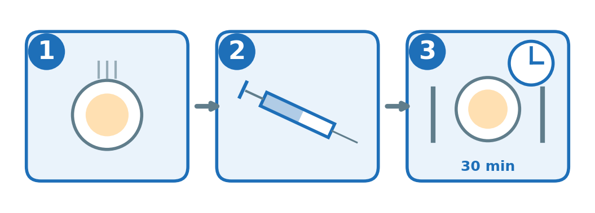
මුලින් ආහාර ඉන්පසු ඉන්සියුලින්. (ඉන්සියුලින් ගන්නා කාන්තාවන් සඳහා)
- දිය වන ඉන්සියුලින් මිනිත්තු 30 කින් පමණ ක්රියා කරයි. ආහාර ප්රමාද වුවහොත් සීනි ඉතා පහළ යයි.
- 1. ආහාරය පිසගෙන පිළියෙල කරන්න. 2. ඉන්පසු එන්නත ගන්න. 3. මිනිත්තු 30 ක් ඇතුළත ආහාර ගන්න.
- ආහාර ගත නොහැකි නම්, දිය වන ඉන්සියුලින් නොගන්න. ඔබේ වෛද්යවරයාගෙන් අසන්න.
முதலில் உணவு. பிறகு இன்சுலின். (இன்சுலின் எடுப்பவர்கள்)
- கரையும் (Soluble) இன்சுலின் சுமார் 30 நிமிடத்தில் வேலை செய்யும். உணவு தாமதமானால் சர்க்கரை மிகவும் குறையும்.
- 1. உணவைச் சமைத்து மேசையில் வையுங்கள். 2. பிறகு ஊசி போடுங்கள். 3. 30 நிமிடத்திற்குள் சாப்பிடுங்கள்.
- சாப்பிட முடியாவிட்டால், கரையும்(soluble) இன்சுலினைப் போடாதீர்கள். உங்கள் மருத்துவரிடம் கேளுங்கள்.
Food first. Then insulin.
- Soluble insulin works in about 30 minutes. If food is late, sugar falls too low.
- 1. Cook and serve the food. 2. Then inject. 3. Eat within 30 minutes.
- If you cannot eat, do not inject soluble insulin. Ask your doctor.
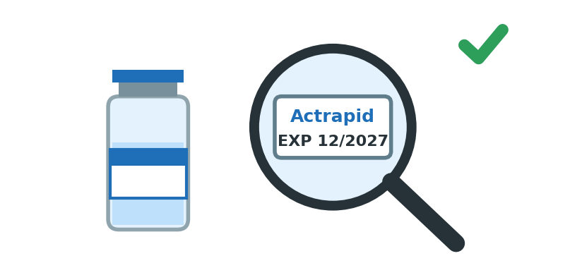
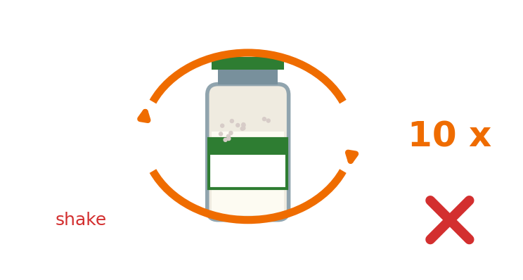
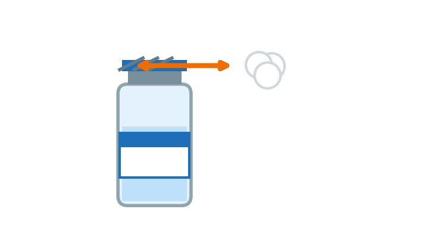
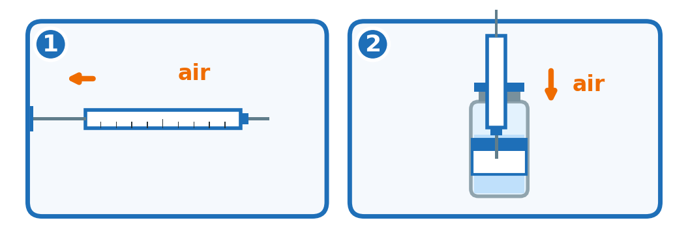
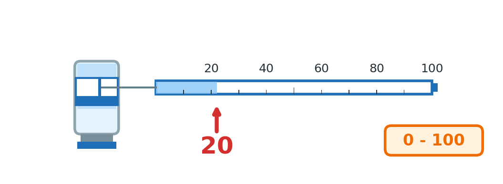
වයල් එකකින් ඉන්සියුලින් ඇදීම (ඉන්සියුලින් ගන්නා කාන්තාවන් සඳහා)
අපගේ වයල් මිලිලීටරයකට ඒකක 100 කි. අපගේ සිරින්ජ ඒකක 0-100 ලකුණු කර ඇත. ඔබේ වෛද්යවරයා පැවසූ අංකය දක්වා ඇදගන්න.
- අත් සෝදන්න. ලේබලය, වර්ගය සහ කල් ඉකුත් වන දිනය පරීක්ෂා කරන්න.
- බොඳ (කිරි පැහැ) ඉන්සියුලින්: වයල් එක අත්ලවල් අතර 10 වතාවක් රෝල් කරන්න. සොලවන්න එපා.
- රබර් පියන පිස දමන්න.
- සිරින්ජයට ඔබේ මාත්රාව දක්වා වාතය ඇද ගන්න.
- වාතය වයල් එක තුළට තල්ලු කරන්න.
- වයල් එක යටිකුරු කරන්න. ඔබේ මාත්රා අංකය දක්වා ඉන්සියුලින් ඇදගන්න.
- බුබුළු අයින් කරන්න (සිරින්ජය තට්ටු කර). අංකය නැවත පරීක්ෂා කරන්න.
குப்பியிலிருந்து இன்சுலின் எடுத்தல் (இன்சுலின் எடுப்பவர்கள்)
எங்கள் குப்பிகள் ஒரு மி.லி.க்கு 100 அலகுகள். எங்கள் சிரிஞ்சுகளில் 0-100 அலகுகள் குறிக்கப்பட்டுள்ளன. உங்கள் மருத்துவர் சொன்ன எண் வரை இழுத்து எடுங்கள்.
- கைகளைக் கழுவுங்கள். லேபிள், வகை, காலாவதி தேதி ஆகியவற்றைச் சரிபார்க்கவும்.
- கலங்கலான (பால் நிற) இன்சுலின்: குப்பியை இரு உள்ளங்கைகளுக்கு இடையே 10 முறை உருட்டுங்கள். குலுக்க வேண்டாம்.
- ரப்பர் மூடியைத் துடைக்கவும்.
- சிரிஞ்சில் உங்கள் அளவு வரை காற்றை இழுக்கவும்.
- காற்றைக் குப்பிக்குள் செலுத்துங்கள்.
- குப்பியைத் தலைகீழாகப் பிடியுங்கள். உங்கள் அளவு எண் வரை இன்சுலினை இழுக்கவும்.
- குமிழிகளை (சிரிஞ்சைத் தட்டி) வெளியேற்றுங்கள். எண்ணை மீண்டும் சரிபார்க்கவும்.
Drawing up insulin from a vial
Our vials are 100 units per ml. Our syringes are marked 0-100 units. Draw up to the number your doctor said.
- Wash hands. Check the label, type and expiry.
- Cloudy insulin: roll the vial 10 times between your palms. Do not shake.
- Wipe the rubber top.
- Draw air into the syringe up to your dose.
- Push the air into the vial.
- Turn the vial upside down. Draw insulin to your dose number.
- Tap out bubbles. Check the number again.
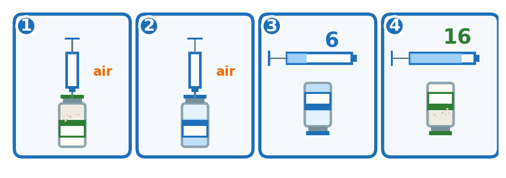
පැහැදිලි සහ බොඳ ඉන්සියුලින් එකම සිරින්ජයේ මිශ්ර කිරීම (හෙදිය විසින් උගන්වා ඇත්නම් පමණි)
මතක තබාගන්න: පැහැදිලි ඉන්සියුලින් එක බොඳ එකට පෙර.
- බොඳ වයල් එකට වාතය ඇද දමන්න. ඉඳිකටුව ඉවත් කරන්න. ඉන්සියුලින් ඇදගන්න එපා.
- පැහැදිලි වයල් එකට වාතය ඇද දමන්න. පැහැදිලි මාත්රාව ඇදගන්න.
- ඉඳිකටුව බොඳ වයල් එකට දමන්න. මුළු අංකය දක්වා ඇදගන්න.
- උදාහරණය: පැහැදිලි 6 + බොඳ 10 = 16 දක්වා ඇදගන්න.
- බොඳ එක වැඩියෙන් ඇදගත්තොත්, සියල්ල ඉවත දමා නැවත පටන් ගන්න.
தெளிவான, கலங்கலான இன்சுலினை ஒரே சிரிஞ்சில் கலத்தல் (செவிலியர் கற்றுக்கொடுத்திருந்தால் மட்டும்)
நினைவில் வையுங்கள்: தெளிவானது முதலில், கலங்கலானது பின்னர்.
- கலங்கலான குப்பிக்குள் காற்றைச் செலுத்துங்கள். ஊசியை வெளியே எடுங்கள். இன்சுலினை இழுக்க வேண்டாம்.
- தெளிவான குப்பிக்குள் காற்றைச் செலுத்துங்கள். தெளிவான அளவை இழுத்து எடுங்கள்.
- ஊசியைக் கலங்கலான குப்பிக்குள் செலுத்துங்கள். மொத்த எண் வரை இழுக்கவும்.
- எடுத்துக்காட்டு: தெளிவானது 6 + கலங்கலானது 10 = 16 வரை இழுக்கவும்.
- கலங்கலானது அதிகமாக வந்துவிட்டால், எல்லாவற்றையும் கொட்டிவிட்டு மீண்டும் தொடங்குங்கள்.
Mixing clear and cloudy in one syringe
Remember: CLEAR before CLOUDY.
- Air into the cloudy vial. Pull the needle out. Draw nothing.
- Air into the clear vial. Draw the clear dose.
- Put the needle in the cloudy vial. Draw up to the total number.
- Example: 6 clear + 10 cloudy = draw up to 16.
- If you draw too much cloudy, throw it all away and start again.
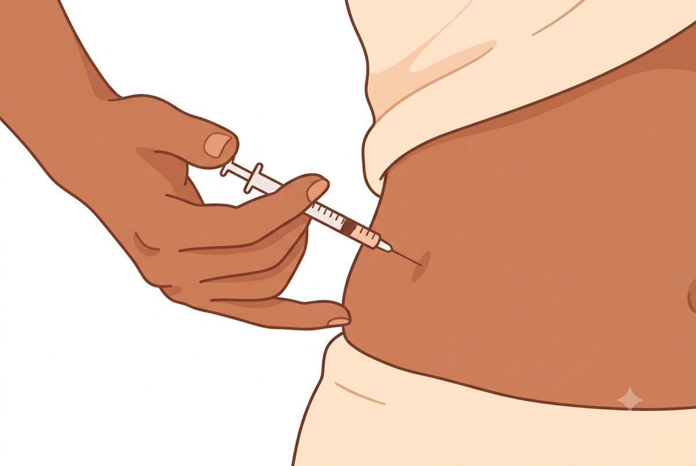
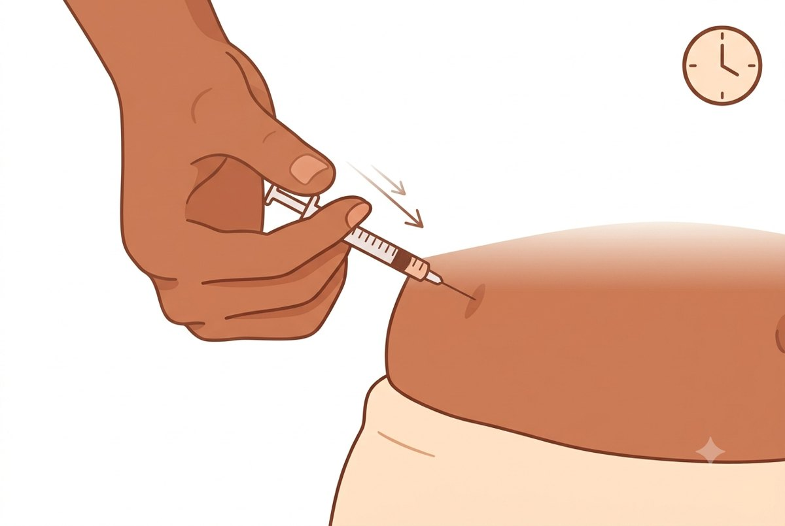
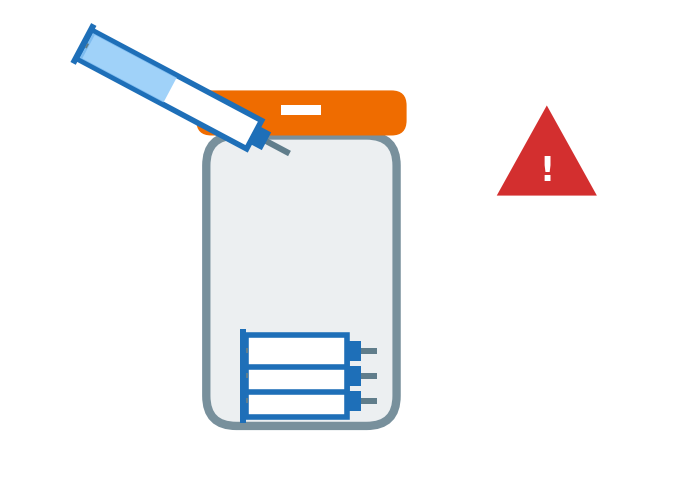
එන්නත ලබා ගැනීම (ඉන්සියුලින් ගන්නා කාන්තාවන් සඳහා)
- පිරිසිදු, වියළි ස්ථානයක් තෝරන්න (D-14).
- ඉඳිකටුව කෙළින්ම ඇතුළු කරන්න. ඔබ කෙට්ටු කෙනෙක් නම් සම ඇඹරගන්න.
- පිස්ටනය සෙමින් සම්පූර්ණයෙන් තල්ලු කරන්න.
- ඉවතට ගැනීමට පෙර 10 දක්වා ගණන් කරන්න.
- අතුල්ලන්න එපා.
- පියන නැවත දමන්න එපා. සිරින්ජය තියුණු දේ දමන බෝතලයට (පියනක් සහිත ශක්තිමත් ප්ලාස්ටික් බෝතලයක්) දමන්න.
- සෑම වතාවකම අලුත් සිරින්ජයක් භාවිතා කරන්න.
ஊசி போடுதல் (இன்சுலின் எடுப்பவர்கள்)
- சுத்தமான, உலர்ந்த இடத்தைத் தேர்ந்தெடுங்கள் (D-14).
- ஊசியை நேராகச் செலுத்துங்கள். மெலிந்தவர்கள் தோலைச் சிறிது பிடித்துக்கொள்ளுங்கள்.
- உலக்கையை மெதுவாக முழுவதும் அழுத்துங்கள்.
- வெளியே எடுப்பதற்கு முன் 10 வரை எண்ணுங்கள்.
- தேய்க்க வேண்டாம்.
- மூடியை மீண்டும் போட வேண்டாம். சிரிஞ்சை கூரான பொருட்களுக்கான போத்தலில் (மூடியுடன் கூடிய உறுதியான பிளாஸ்டிக் போத்தல்) போடுங்கள்.
- ஒவ்வொரு முறையும் புதிய சிரிஞ்ச்.
Giving the injection
- Choose a clean, dry site (D-14).
- Needle straight in. Pinch the skin if you are thin.
- Push the plunger slowly all the way.
- Count to 10 before pulling out.
- Do not rub.
- Do not put the cap back. Drop the syringe into the sharps bottle (a strong plastic bottle with a lid).
- New syringe every time.
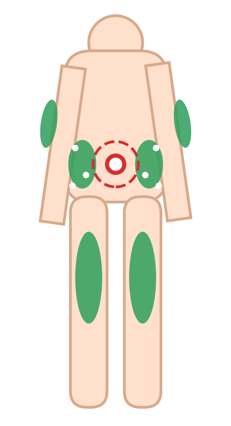
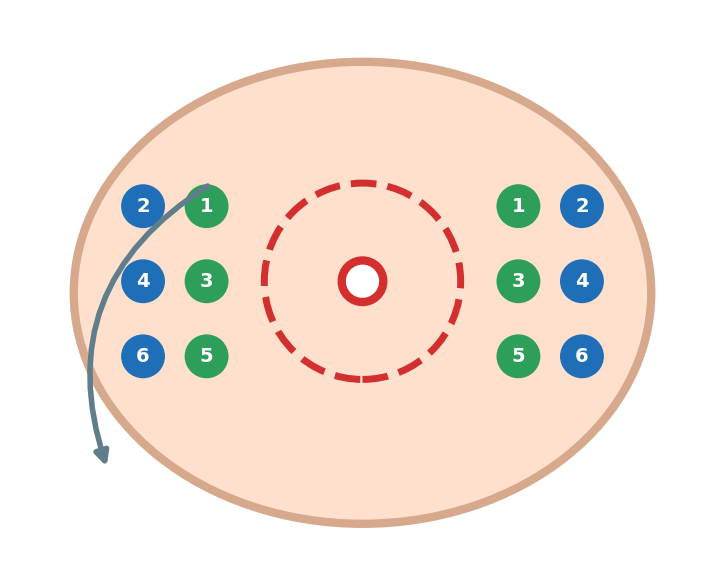
එන්නත ලබා ගත යුතු ස්ථාන (ඉන්සියුලින් ලබාගන්නන් සඳහා )
| ස්ථානය | භාවිතය |
|---|---|
| උදරය (නාභියේ සිට සෙන්ටිමීටර 5 ක් ඈත්ව; ගර්භණීභාවයේ අග කාලයේ පැති පැත්ත) | ආහාරවලට පෙර දිය වන ඉන්සියුලින් |
| කලවය (ඉදිරිපස, පිටත) | නිදාගැනීමට පෙර අයිසොෆේන් |
| ඉහළ අතේ පිටුපස, තට්ටම | ඕනෑම එකක් |
- සෑම වතාවකම ස්ථානය වෙනස් කරන්න. පෙර ස්ථානයෙන් සෙන්ටිමීටර 2 ක් පමණ ඉවතින් තබන්න.
- ගැටිති, කැළැල් හෝ තැලුණු තැන්වලට එන්නත් නොකරන්න. ගැටිති ගැන ඔබේ හෙදියට කියන්න.
ஊசி போடும் இடங்கள் (இன்சுலின் எடுப்பவர்கள்)
| இடம் | பயன்பாடு |
|---|---|
| வயிறு (தொப்புளிலிருந்து 5 செ.மீ. விலகி; கர்ப்பத்தின் பிற்பகுதியில் பக்கவாட்டில்) | உணவுக்கு முன் கரையும் (Soluble) இன்சுலின் |
| தொடை (முன்புறம், வெளிப்புறம்) | படுக்கைக்கு முன் ஐசோஃபேன் |
| மேல் கையின் பின்புறம், புட்டம் | எதுவும் |
- ஒவ்வொரு முறையும் இடத்தை மாற்றுங்கள். முந்தைய இடத்திலிருந்து சுமார் 2 செ.மீ. தள்ளி வையுங்கள்.
- கட்டிகள், தழும்புகள், காயம்பட்ட இடங்களில் போட வேண்டாம். கட்டிகள் இருந்தால் செவிலியரிடம் தெரிவியுங்கள்.
Where to inject
| Site | Use |
|---|---|
| Abdomen (stay 5 cm from the belly button; sides in late pregnancy) | Soluble before meals |
| Thigh (front, outer) | Isophane at bedtime |
| Back of upper arm, buttock | Either |
- Change the spot each time. Keep about 2 cm from the last spot.
- Do not inject into lumps, scars or bruises. Tell your nurse about lumps.
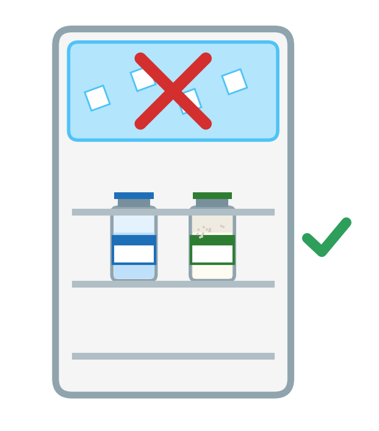
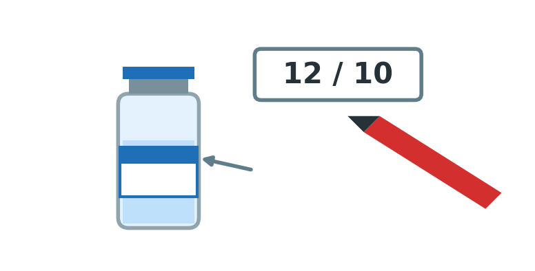
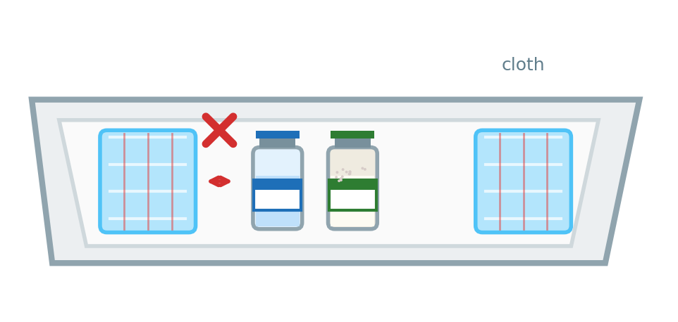
ඉන්සියුලින් ගබඩා කිරීම (ඉන්සියුලින් ලබාගන්නන් සඳහා)
- විවෘත නොකළ වයල්: ශීතකරණයේ (කිසිවිටෙක ෆ්රීසරයේ නොවේ).
- භාවිතා කරන වයල්: හැකි නම් ශීතකරණයේ, නැතහොත් සෙවණ සහිත සිසිල් තැනක. විවෘත කළ දිනය ලියන්න. සති 4 ක් ඇතුළත භාවිතා කර [CHECK] ඉන්පසු ඉවත දමන්න.
- කිසිවිටෙක ඉන්සියුලින් හිරු එළියේ, රත් වූ වාහනයක, හෝ ලිපක් අසල නොතබන්න.
- භාවිතා නොකරන්න: ශීත කළ ඉන්සියුලින්, බොඳ පැහැති පැහැදිලි ඉන්සියුලින්, ගැටිති සහිත බොඳ ඉන්සියුලින්, හෝ කල් ඉකුත් වූ ඉන්සියුලින්.
- Regifoam පෙට්ටියෙන් ගෙදර ගෙන යාම: අයිස් පැකට් රෙදි කඩකින් ඔතන්න, වයල් අයිස් හා ස්පර්ශ නොවිය යුතුයි. කෙළින්ම ගෙදර යන්න. පැමිණි විගස ශීතකරණයේ තබන්න.
இன்சுலினைச் சேமித்தல் (இன்சுலின் எடுப்பவர்கள்)
- திறக்காத குப்பிகள்: குளிர்சாதனப் பெட்டியில் (ஒருபோதும் உறைவிப்பானில் அல்ல).
- பயன்பாட்டில் உள்ள குப்பி: முடிந்தால் குளிர்சாதனப் பெட்டியில், அல்லது நிழலான குளிர்ச்சியான இடத்தில். திறந்த தேதியை எழுதுங்கள். 4 வாரங்களுக்குள் பயன்படுத்தி [CHECK] பின்னர் தூக்கியெறியுங்கள்.
- ஒருபோதும் இன்சுலினை வெயிலில், சூடான வாகனத்தில், அல்லது அடுப்புக்கு அருகில் வைக்காதீர்கள்.
- பயன்படுத்த வேண்டாம்: உறைந்த இன்சுலின், கலங்கிய தெளிவான இன்சுலின், கட்டிகளுள்ள கலங்கலான இன்சுலின், அல்லது காலாவதியானது.
- Regifoam பெட்டியில் வீட்டுக்குக் கொண்டு செல்லுதல்: ஐஸ் பேக்குகளைத் துணியில் சுற்றுங்கள், குப்பிகள் ஐஸ் மீது படக்கூடாது. நேராக வீட்டுக்குச் செல்லுங்கள். வந்தவுடன் குளிர்சாதனப் பெட்டியில் வையுங்கள்.
Storing insulin
- Unopened vials: in the fridge (never in the freezer).
- Vial in use: in the fridge if you can, or in a cool shady place. Write the date you opened it. Use within 4 weeks CHECK, then throw away.
- Never leave insulin in the sun, in a hot vehicle, or near the stove.
- Do not use: frozen insulin, clear insulin that looks cloudy, cloudy insulin with lumps, or out-of-date insulin.
- Carrying home in the Regifoam box: ice packs wrapped in cloth, vials must not touch the ice. Go home straight away. Fridge on arrival.
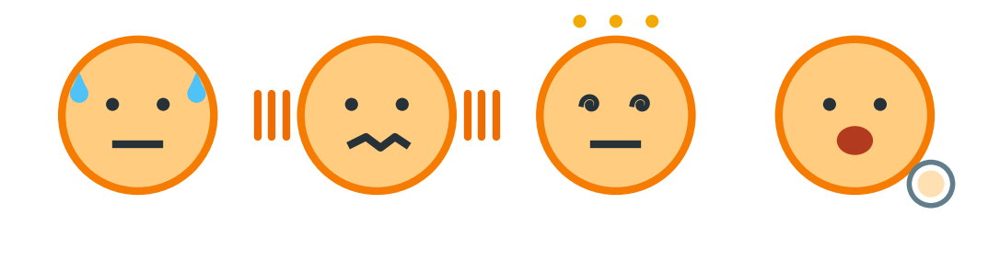
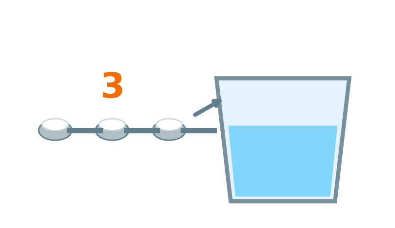
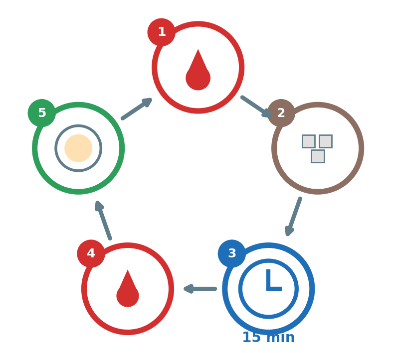
සීනි අඩු වීම: 70 ට අඩු (ඉන්සියුලින් සහ ටැබ්ලට් ගන්නන්)
- රෝග ලක්ෂණ: වෙව්ලීම, දහඩිය දැමීම, හදවත වේගයෙන් ගැහීම, බඩගින්න, කරකැවිල්ල, හිසේ කැක්කුම, ව්යාකුල සහගත බව (confused).
- හේතු: ප්රමාද වූ හෝ මඟ හැරුණු ආහාර වේල, ඉන්සියුලින් වැඩිවීම, ව්යායාම, වමනය.
- කළ යුත්තේ:
- පරීක්ෂා කරන්න. අඩු නම්, හෝ අඩු යැයි හැඟී පරීක්ෂා කළ නොහැකි නම්, වහාම ප්රතිකාර කරන්න.
- වතුර වීදුරුවක අඩකට තේ හැඳි 3 ක් සීනි දමා ගන්න, හෝ පැණි බීමක්.
- මිනිත්තු 15 ක් රැඳී සිටින්න. නැවත පරීක්ෂා කරන්න. තවම අඩු නම් නැවත කරන්න.
- ඉන්පසු කෙටි ආහාරයක් හෝ ප්රධාන ආහාරය ගන්න.
- සැමවිටම සීනි රැගෙන යන්න. ඔබේ පවුලේ අයට කියන්න.
- ඇයට ගිල ගත නොහැකි නම් හෝ සිහිසුන් නම්: කටට කිසිවක් නොදමන්න. ඇයව පැත්තකට හරවා තබන්න. වහාම රෝහලට යන්න.
- සමහර රුධිර පීඩන සහ තයිරොයිඩ් ටැබ්ලට් (ලැබටලෝල්, ප්රොප්රැනොලෝල්) මෙම සලකුණු සඟවයි. ඔබේ පරීක්ෂාව මත රඳා පවතින්න.
சர்க்கரை குறைதல்: 70 க்குக் கீழ் (இன்சுலின், மாத்திரை எடுப்பவர்கள்)
- அறிகுறிகள்: நடுக்கம், வியர்வை, இதயம் வேகமாகத் துடித்தல், பசி, தலைச்சுற்றல், தலைவலி, குழப்பம்.
- காரணங்கள்: தாமதமான அல்லது தவறவிட்ட உணவு, அதிக இன்சுலின், உடற்பயிற்சி, வாந்தி.
- செய்ய வேண்டியது:
- பரிசோதியுங்கள். குறைவாக இருந்தால், அல்லது குறைவாக உணர்ந்து பரிசோதிக்க முடியாவிட்டால், உடனே சிகிச்சை செய்யுங்கள்.
- அரை குவளை தண்ணீரில் 3 தேக்கரண்டி சீனி கலந்து குடியுங்கள், அல்லது இனிப்புப் பானம்.
- 15 நிமிடம் காத்திருங்கள். மீண்டும் பரிசோதியுங்கள். இன்னும் குறைவாக இருந்தால் மீண்டும் செய்யுங்கள்.
- பிறகு சிற்றுண்டி அல்லது உணவு சாப்பிடுங்கள்.
- எப்போதும் சீனியைக் கையில் வைத்திருங்கள். குடும்பத்தினருக்குச் சொல்லுங்கள்.
- அவரால் விழுங்க முடியாவிட்டால் அல்லது மயக்கமாக இருந்தால்: வாயில் எதுவும் ஊற்ற வேண்டாம். ஒரு பக்கமாகச் சாய்த்துப் படுக்க வையுங்கள். உடனே மருத்துவமனைக்குச் செல்லுங்கள்.
- சில இரத்த அழுத்த, தைராய்டு மாத்திரைகள் (லபெடலால், புரோப்ரனோலால்) இந்த அறிகுறிகளை மறைக்கக்கூடும். பரிசோதனையை நம்புங்கள்.
Low sugar: under 70
- Signs: shaking, sweating, fast heartbeat, hunger, dizziness, headache, confusion.
- Causes: late or missed meal, too much insulin, exercise, vomiting.
- What to do:
- Test. If low, or you feel low and cannot test, treat at once.
- Take 3 teaspoons of sugar in half a glass of water, or a sweet drink.
- Wait 15 minutes. Test again. Repeat if still low.
- Then eat a snack or meal.
- Always carry sugar. Tell your family.
- If she cannot swallow or is unconscious: put nothing in her mouth. Turn her on her side. Go to hospital now.
- Some BP and thyroid tablets (labetalol, propranolol) can hide the signs. Rely on your test.
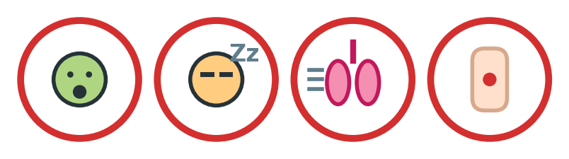
ඔබට අසනීප වූ විට (සියලුදෙනා)
- අසනීප නිසා කිසිවිටෙක ඉන්සියුලින් නොනවත්වන්න.
- වඩාත් නිතර පරීක්ෂා කරන්න. දියර වැඩිපුර පානය කරන්න.
- පහත සඳහන් ලකුණු ඇතනම් රෝහලට එන්න: වමනය කර දියර රඳවා ගත නොහැකි නම්, දැඩි පිපාසය සහ නිදිමත, වේගවත් හුස්ම ගැනීම හෝ බඩේ වේදනාව.
- සීනි ඉලක්කයට වඩා දෙවරක් ඉහළ නම්: එදිනම සායනයට දන්වන්න.
உடல்நலமில்லாதபோது (எல்லோரும்)
- உடல்நலமில்லாததால் இன்சுலினை ஒருபோதும் நிறுத்தாதீர்கள்.
- அடிக்கடி பரிசோதியுங்கள். திரவங்களை அதிகம் அருந்துங்கள்.
- மருத்துவமனைக்கு வாருங்கள்: வாந்தியால் திரவங்களை உள்ளே தங்க வைக்க முடியாவிட்டால், அதிகத் தாகம், தூக்கக் கலக்கம், வேகமான சுவாசம் அல்லது வயிற்று வலி இருந்தால்.
- சர்க்கரை இலக்கை விட இரு முறை அதிகமாக இருந்தால்: அதே நாளில் கிளினிக்கிற்குத் தெரிவியுங்கள்.
When you are unwell
- Never stop insulin because you are sick.
- Test more often. Drink fluids.
- Come to hospital if: vomiting and cannot keep fluids down, very thirsty and drowsy, fast breathing or belly pain.
- Sugar over target twice: tell your clinic the same day.
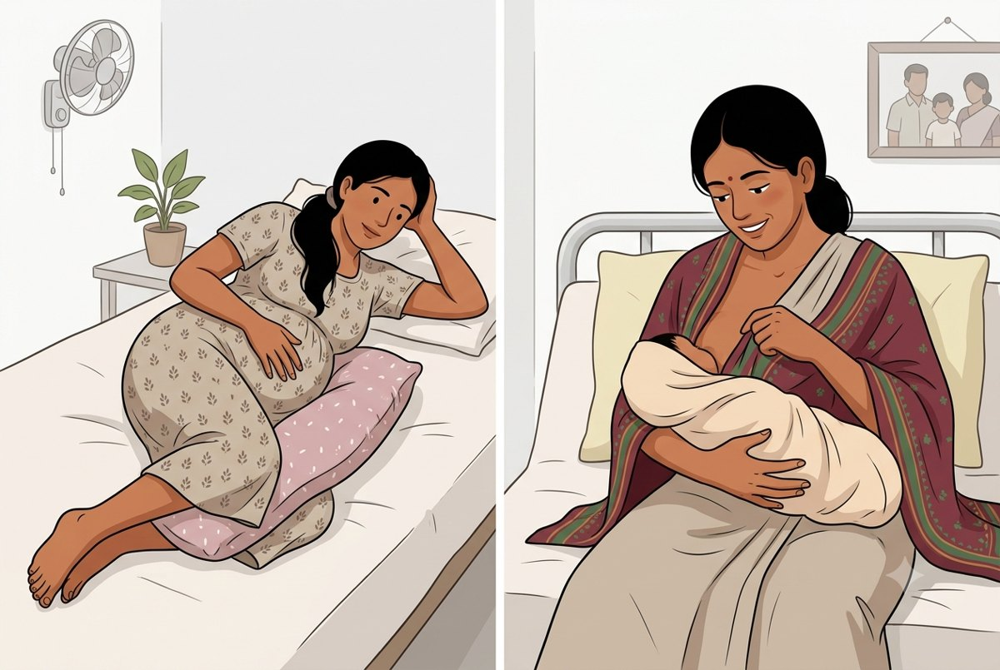
ගර්භනී කාලයේ දියවැඩියාව: දරුවා සහ ප්රසූතිය (ගර්භනී)
- දරුවාගේ චලනය: සති 28 පමණ සිට දරුවාගේ සාමාන්ය චලන රටාව හඳුනාගන්න. චලනය අඩු වුවහොත් එවෙලෙහිම පැමිණෙන්න.
- ප්රසූතිය ඔබේ වෛද්යවරයා සමඟ සැලසුම් කෙරේ. ඔබේ සටහන් පොත, බෙහෙත් සහ සායන පොත ගෙන එන්න.
- ප්රසූතියෙන් පසු: GDM ටැබ්ලට් හෝ ඉන්සියුලින් නවතී. කලින් සිට ඇති දියවැඩියාව: ඉන්සියුලින් අවශ්යතාව අඩු වේ. ඔබේ වෛද්යවරයා නව මාත්රාවක් ලබා දෙනු ඇත.
- මුල් කාලයේම කිරි දෙන්න. කිරි දීමේදී ඉන්සියුලින් සහ මෙට්ෆෝමින් ආරක්ෂිතයි.
கர்ப்பகால நீரிழிவு: குழந்தையும் பிரசவமும் (கர்ப்பிணி)
- குழந்தையின் அசைவுகள்: சுமார் 28 வாரங்களிலிருந்து குழந்தையின் வழக்கமான அசைவு முறையைக் கவனியுங்கள். அசைவு குறைந்தால் அதே நாளில் வாருங்கள்.
- பிரசவம் உங்கள் மருத்துவருடன் திட்டமிடப்படும். உங்கள் குறிப்பேடு, மருந்துகள், கிளினிக் புத்தகத்தைக் கொண்டுவாருங்கள்.
- பிரசவத்திற்குப் பின்: GDM மாத்திரைகள் அல்லது இன்சுலின் நிறுத்தப்படும். முன்பே இருந்த நீரிழிவு: இன்சுலின் தேவை குறையும். உங்கள் மருத்துவர் புதிய அளவு தருவார்.
- சீக்கிரமே தாய்ப்பால் கொடுங்கள். தாய்ப்பாலூட்டும்போது இன்சுலினும் மெட்ஃபோர்மினும் பாதுகாப்பானவை.
Diabetes in pregnancy: baby and delivery
- Baby's movements: from about 28 weeks learn your baby's usual pattern. Less movement: come the same day.
- Delivery is planned with your doctor. Bring your diary, medicines and clinic book.
- After delivery: GDM tablets or insulin stop. Pre-existing diabetes: insulin need falls. Your doctor gives a new dose.
- Breastfeed early. Insulin and metformin are safe in breastfeeding.
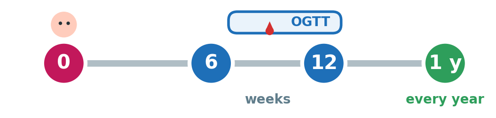
ප්රසූතියෙන් පසු: සීනි පරීක්ෂාව (ගර්භනී)
- ප්රසූතියෙන් සති 6-12 කට පසු සීනි පරීක්ෂාවක් (OGTT) සඳහා පැමිණෙන්න. දරුවාගේ එන්නත් පැමිණීම සමඟ වෙන් කරගන්න.
- සාමාන්ය නම්: සෑම වසරකම පරීක්ෂා කරන්න.
- GDM තිබූ කාන්තාවන්ට වර්ග 2 දියවැඩියාව වැළඳීමේ අවදානම වැඩිය. නිරෝගී ආහාර, ව්යායාම සහ නිසි බර මගින් එම අවදානම අඩු කළ හැක.
- ඊළඟ ගර්භණීභාවය: ඔබේ වෛද්යවරයාට කලින්ම දන්වා සැලසුම් කරන්න.
பிரசவத்திற்குப் பின்: சர்க்கரைப் பரிசோதனை (கர்ப்பிணி)
- பிரசவத்திற்குப் பின் 6-12 வாரங்களில் சர்க்கரைப் பரிசோதனைக்கு (OGTT) வாருங்கள். குழந்தையின் தடுப்பூசி வருகையுடன் சேர்த்துப் பதிவு செய்யுங்கள்.
- இயல்பாக இருந்தால்: ஆண்டுதோறும் பரிசோதியுங்கள்.
- GDM இருந்த பெண்களுக்கு வகை 2 நீரிழிவு வரும் வாய்ப்பு அதிகம். ஆரோக்கிய உணவு, உடற்பயிற்சி, சரியான எடை ஆகியவை இந்த ஆபத்தைக் குறைக்கும்.
- அடுத்த கர்ப்பம்: முன்கூட்டியே உங்கள் மருத்துவரிடம் தெரிவித்துத் திட்டமிடுங்கள்.
After delivery: the sugar test
- Come for a sugar test (OGTT) 6-12 weeks after delivery. Book it with your baby's immunisation visit.
- If normal: test every year.
- Women who had GDM are more likely to get Type 2 diabetes. Healthy food, exercise and healthy weight lower the chance.
- Next pregnancy: tell your doctor early and plan it.
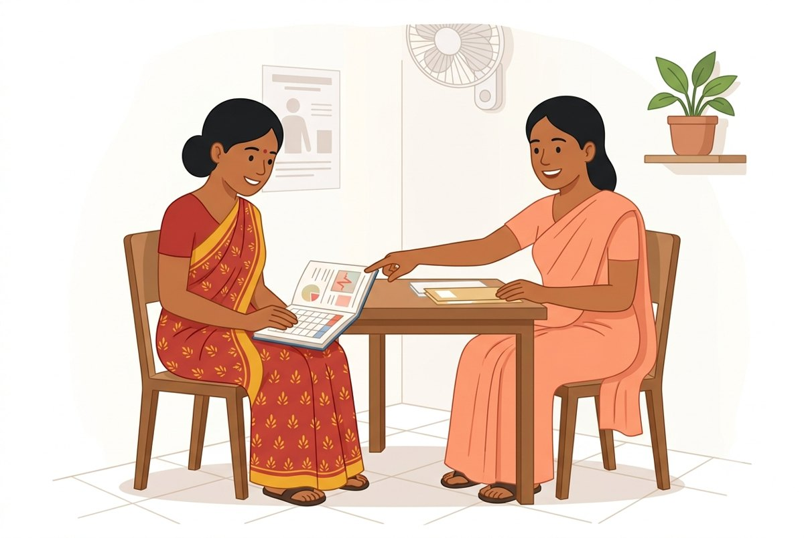
නාරිවේද කාන්තාවන්ගේ දියවැඩියාව (ගර්භනී නොවන)
- ශල්යකර්මයට පෙර: ඔබේ සටහන් පොත ගෙන එන්න. එදින ඔබ රැකබලා ගන්නා කණ්ඩායම ඔබේ බෙහෙත් වෙනස් කරනු ලැබිය හැක. උපදෙස් නොලැබුණහොත් ඉන්සියුලින් නොනවත්වන්න.
- නිරාහාරව සිටීම: ආහාර හා පාන වර්ග නවත්වන විට කණ්ඩායම ඔබට කියනු ඇත. සාමාන්ය රීතිය නම් ශල්යකර්මයට පැය 2 කට පෙර දක්වා පැහැදිලි දියර සහ පැය 6 කට පෙර දක්වා සැහැල්ලු ආහාරයකි.
- ශල්යකර්මයෙන් පසු: හොඳ සීනි පාලනය යනු වේගවත් සුවය සහ අඩු ආසාදනයි. නැවත කවදා කෑමට හැකිද යන්න ඔබේ කණ්ඩායමෙන් අසන්න: (පැය 24 ඇතුළත) කලින් පරිදි ආහාර ගැනීම සුවය වේගවත් කරයි.
- යීස්ට් ආසාදනය (කැසීම, සුදු ස්රාවය) සහ මුත්රා ආසාදන සීනි ඉහළ විට වැඩියෙන් වේ. ඔබේ වෛද්යවරයාට කියන්න.
- PMOS සහ අක්රමවත් ඔසප් දියවැඩියාව වැළඳීමේ අවදානම වැඩි කරයි. වසරකට වරක් සීනි පරීක්ෂා කරන්න.
- ගැබ් ගැනීමට සැලසුම් කරනවාද? කලින් පැමිණෙන්න, බෙහෙත් සහ සීනි ආරක්ෂිත මට්ටමකට ගෙන ඒමට.
மகளிர் நோய் கிளினிக் பெண்களில் நீரிழிவு (கர்ப்பமில்லாதவர்)
- அறுவைச் சிகிச்சைக்கு முன்: உங்கள் குறிப்பேட்டைக் கொண்டுவாருங்கள். அன்று உங்களைக் கவனிக்கும் குழு உங்கள் மருந்துகளை மாற்றலாம். சொல்லப்படாவிட்டால் இன்சுலினை நிறுத்த வேண்டாம்.
- உண்ணாநோன்பு: உணவும் பானமும் எப்போது நிறுத்த வேண்டும் என்று குழு உங்களுக்குச் சொல்லும். வழக்கமான விதி: அறுவைச் சிகிச்சைக்கு 2 மணி நேரம் முன் வரை தெளிவான திரவங்களும், 6 மணி நேரம் முன் வரை இலேசான உணவும்.
- அறுவைச் சிகிச்சைக்குப் பின்: நல்ல சர்க்கரைக் கட்டுப்பாடு என்றால் வேகமான ஆறுதல், குறைவான தொற்று. எப்போது மீண்டும் சாப்பிடலாம் என்று உங்கள் குழுவிடம் கேளுங்கள்: சீக்கிரமே (24 மணி நேரத்திற்குள்) வழக்கமான உணவு சுவாதீனத்தை விரைவுபடுத்தும்.
- பூஞ்சைத் தொற்று (அரிப்பு, வெள்ளைப்படுதல்) மற்றும் சிறுநீர்த் தொற்றுகள் சர்க்கரை அதிகமாக இருக்கும்போது அதிகம் வரும். உங்கள் மருத்துவரிடம் சொல்லுங்கள்.
- PMOS மற்றும் ஒழுங்கற்ற மாதவிடாய் நீரிழிவு வரும் வாய்ப்பை அதிகரிக்கும். ஆண்டுக்கு ஒருமுறை சர்க்கரை பரிசோதியுங்கள்.
- கர்ப்பமாகத் திட்டமிடுகிறீர்களா? முதலில் வாருங்கள், மருந்துகளையும் சர்க்கரையையும் பாதுகாப்பான நிலைக்குக் கொண்டுவர.
Diabetes in gynae women
- Before surgery: bring your diary. Your team may change your medicine on the day. Do not stop insulin unless told.
- Fasting: your team will tell you when to stop food and drink. The usual rule is clear fluids up to 2 hours and a light meal up to 6 hours before surgery.
- After surgery: good sugar means faster healing and less infection. Ask your team when you can eat again: normal food early (within 24 hours) helps healing.
- Thrush (itching, white discharge) and urine infections are more common with high sugar. Tell your doctor.
- PMOS and irregular periods raise the chance of diabetes. Check sugar once a year.
- Planning pregnancy? Come first so medicines and sugar can be made safe.

මිථ්යා සහ සත්ය (සියලුදෙනා)
| මිථ්යාව | සත්යය |
|---|---|
| "ඉන්සියුලින් මගේ දරුවාට හානි කරයි." | ඉහළ සීනි දරුවාට හානිකරයි. ඉන්සියුලින් ආරක්ෂිතයි. |
| "ඉන්සියුලින් පටන් ගත්තොත් කවදාවත් නවත්වන්න බෑ." | GDM වලට භාවිතා කරන ඉන්සියුලින් ප්රසූතියෙන් පසු නවතී. |
| "මම දෙදෙනෙකුට කෑමට ඕනෑ." | ටිකක් වැඩියෙන් පමණි, දෙගුණයක් නොවේ. |
| "සීනි නැති රසකැවිලි නිදහස්." | ස්වල්ප වශයෙන් පමණි. |
| "දියවැඩියාව කියන්නේ බත් නැහැ." | මනින ලද ප්රමාණයෙන් බත් කෑමට කමක් නැත. රතු හෝ පාබොයිල් බත් වඩාත් සුදුසුයි. |
கட்டுக்கதைகளும் உண்மைகளும் (எல்லோரும்)
| கட்டுக்கதை | உண்மை |
|---|---|
| "இன்சுலின் என் குழந்தைக்குத் தீங்கு செய்யும்." | அதிகச் சர்க்கரையே குழந்தைக்குத் தீங்கு. இன்சுலின் பாதுகாப்பானது. |
| "இன்சுலின் ஆரம்பித்தால் ஒருபோதும் நிறுத்த முடியாது." | GDM இன்சுலின் பிரசவத்திற்குப் பின் நிறுத்தப்படும். |
| "நான் இருவருக்குச் சாப்பிட வேண்டும்." | சற்றுக் கூடுதல் மட்டும்; இரு மடங்கு அல்ல. |
| "சீனி இல்லாத இனிப்புகள் தடையில்லை." | சிறிதளவு மட்டுமே. |
| "நீரிழிவு என்றால் சோறு கூடாது." | அளந்த அளவில் சோறு சாப்பிடலாம். சிவப்பரிசி அல்லது பாபாய்ல்டு அரிசி சிறந்தது. |
Myths and facts
| Myth | Fact |
|---|---|
| "Insulin will harm my baby." | High sugar harms the baby. Insulin is safe. |
| "Once I start insulin I can never stop." | GDM insulin stops after delivery. |
| "I must eat for two." | A little extra, not double. |
| "Sugar-free sweets are free." | Small amounts only. |
| "Diabetes means no rice." | Rice is fine in measured portions. Red or parboiled rice is best. |
අධි රුධිර පීඩනය (ප්රෙෂර්) உயர் இரத்த அழுத்தம் (பிரஷர்) Chapter 2: High Blood Pressure
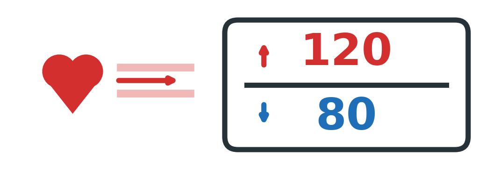
රුධිර පීඩනය යනු කුමක්ද?
- රුධිර පීඩනය (BP) යනු ඔබේ රුධිර නාළවලට රුධිරය යොදන බලයයි.
- එය සංඛ්යා දෙකකින් ලියයි, උදා: 120/80.
- 140/90 හෝ ඊට වැඩි නම් අධිකයි.
- අධි රුධිර පීඩනය බොහෝවිට කිසිදු රෝග ලක්ෂණයක් නොපෙන්වයි. එබැවින් අපි එය පරීක්ෂා කරමු.
இரத்த அழுத்தம் என்றால் என்ன?
- இரத்த அழுத்தம் (BP) என்பது இரத்தக் குழாய்களின் மீது இரத்தம் செலுத்தும் விசை.
- இது இரண்டு எண்களாக எழுதப்படும், எ.கா. 120/80.
- 140/90 அல்லது அதற்கு மேல் என்றால் அதிகம்.
- உயர் இரத்த அழுத்தம் பெரும்பாலும் எந்த அறிகுறியும் காட்டாது. அதனால்தான் நாங்கள் அதைப் பரிசோதிக்கிறோம்.
What is blood pressure?
- BP is the force of blood on your blood vessels.
- It has two numbers, for example 120/80.
- 140/90 or more is high.
- High BP usually gives no symptoms. That is why we check it.
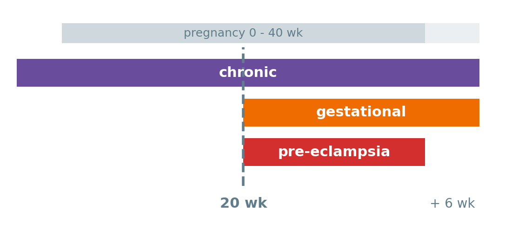
අධි රුධිර පීඩන වර්ග (සියලුදෙනා)
| වර්ගය | එය කුමක්ද |
|---|---|
| දිගුකාලීන අධි රුධිර පීඩනය | ගර්භණීභාවයට පෙර, හෝ ගර්භනී නොවන කාන්තාවක තුළ |
| ගර්භණීභාවයේ අධි රුධිර පීඩනය | සති 20 න් පසු අලුතින් ඇතිවේ. සාමාන්යයෙන් ප්රසූතියෙන් පසු සුව වේ. |
| ප්රී-එක්ලැම්ප්සියා | සති 20 න් පසු අධි රුධිර පීඩනය සමඟ මුත්රාවල ප්රෝටීන් හෝ වෙනත් අවයව බලපෑම්. භයානක විය හැක. |
- පාලනය නොකළ අධි රුධිර පීඩනය ආඝාතය, හෘද සහ වකුගඩු රෝග ඇති කළ හැක.
- ගර්භණීභාවයේදී එය දරුවාගේ වර්ධනය අඩාල වීම, කල් නොපිරී උපත සහ වලිප්පු ඇති කළ හැක.
உயர் இரத்த அழுத்த வகைகள் (எல்லோரும்)
| வகை | அது என்ன |
|---|---|
| நீண்டகால உயர் இரத்த அழுத்தம் | கர்ப்பத்திற்கு முன்பே, அல்லது கர்ப்பமில்லாத பெண்ணில் |
| கர்ப்பகால உயர் இரத்த அழுத்தம் | 20 வாரங்களுக்குப் பின் புதிதாக வருவது. பொதுவாகப் பிரசவத்திற்குப் பின் சரியாகிவிடும். |
| ப்ரீ-எக்லாம்ப்சியா | 20 வாரங்களுக்குப் பின் உயர் இரத்த அழுத்தத்துடன் சிறுநீரில் புரதம் அல்லது பிற உறுப்புப் பாதிப்பு. ஆபத்தானது. |
- கட்டுப்படுத்தப்படாத உயர் இரத்த அழுத்தம் பக்கவாதம், இதய, சிறுநீரக நோய்களை ஏற்படுத்தலாம்.
- கர்ப்பத்தில் இது குழந்தையின் வளர்ச்சிக் குறைவு, குறைப்பிரசவம், வலிப்பு ஆகியவற்றையும் ஏற்படுத்தலாம்.
Kinds of high BP
| Kind | What it is |
|---|---|
| Long-term high BP | Before pregnancy, or in a woman who is not pregnant |
| Gestational high BP | New, after 20 weeks of pregnancy. Usually goes after delivery. |
| Pre-eclampsia | High BP after 20 weeks with protein in the urine or other organ effects. Can be dangerous. |
- Untreated high BP can cause stroke, heart and kidney disease.
- In pregnancy it can also cause poor baby growth, early birth and fits.
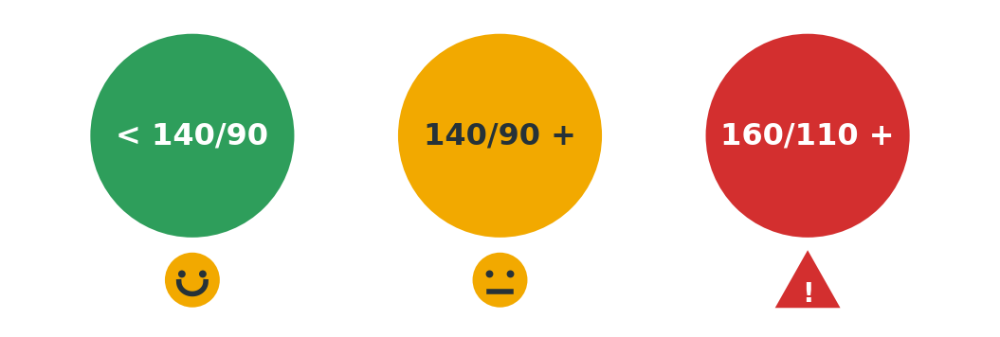
ඔබේ රුධිර පීඩන අගයන් (සියලුදෙනා)
| කියවීම | ක්රියාමාර්ගය |
|---|---|
| 140/90 ට අඩු | හොඳයි. 120-139/80-89 නම්, තවමත් ලුණු අඩු කර, ක්රියාශීලීව සිට, නිසි බර පවත්වා ගන්න. |
| 140/90 හෝ ඊට වැඩි | එදිනම ඔබේ සායනයට දන්වන්න |
| 160/110 හෝ ඊට වැඩි, හෝ අනතුරු ඇඟවීමේ ලක්ෂණයක් (H-07) | දැන්ම රෝහලට එන්න |
- ඔබේ වෛද්යවරයා අඩු ඉලක්කයක් තැබිය හැක. මෙහි ලියන්න: ____ [CHECK: ගර්භනී නොවන කාන්තාවන් සඳහා]
உங்கள் இரத்த அழுத்த அளவுகள் (எல்லோரும்)
| அளவீடு | செய்ய வேண்டியது |
|---|---|
| 140/90 க்குக் குறைவு | நல்லது. 120-139/80-89 எனில், தொடர்ந்து உப்பைக் குறைத்து, சுறுசுறுப்பாக இருந்து, சரியான எடையைப் பேணுங்கள். |
| 140/90 அல்லது அதற்கு மேல் | அதே நாளில் உங்கள் கிளினிக்கிற்குத் தெரிவியுங்கள் |
| 160/110 அல்லது அதற்கு மேல், அல்லது ஆபத்து அறிகுறி (H-07) | உடனே மருத்துவமனைக்கு வாருங்கள் |
- உங்கள் மருத்துவர் குறைந்த இலக்கை தரலாம். இங்கே எழுதுங்கள்: ____ [CHECK: கர்ப்பமில்லாத பெண்களுக்கு]
Your BP numbers
| Reading | Action |
|---|---|
| Under 140/90 | Good. If it is 120-139 / 80-89, still cut salt, stay active and keep a healthy weight. |
| 140/90 or more | Tell your clinic the same day |
| 160/110 or more, or a danger sign (H-07) | Come to hospital now |
- Your doctor may set a lower target. Write it here: ____ CHECK for non-pregnant women
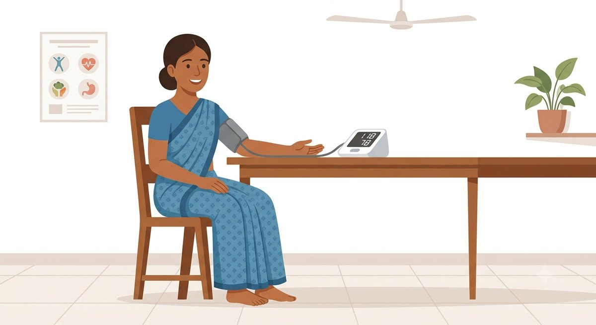
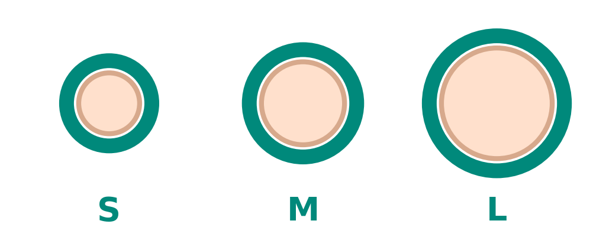
රුධිර පීඩනය පරීක්ෂා කිරීම (සියලුදෙනා)
- හිඳගෙන මිනිත්තු 5 ක් විවේක ගන්න.
- පරීක්ෂාවට මිනිත්තු 30 කට පෙර තේ, කෝපි, දුම්පානය හෝ ව්යායාම නොකරන්න. මුත්රාශය හිස් කරන්න.
- පිටට ආධාරයක්, පාද බිම තබා, අත හදවත මට්ටමට තබා ගන්න.
- ඉහළ අතට නිවැරදි ප්රමාණයේ කෆ් එකක් පළඳින්න. ලොකු අත් සඳහා විශාල කෆ් එකක් අවශ්යයි.
- කතා නොකරන්න.
- විනාඩියක ඉඩක් තබා කියවීම් දෙකක් ලබා ගන්න. දෙකම ලියන්න.
- සෑම දිනකම එකම වේලාවලට (උදේ සහ සවස), හෝ උපදෙස් ලද පරිදි.
இரத்த அழுத்தத்தைப் பரிசோதித்தல் (எல்லோரும்)
- உட்கார்ந்து 5 நிமிடம் ஓய்வெடுங்கள்.
- பரிசோதனைக்கு 30 நிமிடம் முன்பு தேநீர், காபி, புகைபிடித்தல், உடற்பயிற்சி வேண்டாம். சிறுநீர்ப்பையைக் காலி செய்யுங்கள்.
- முதுகுக்கு ஆதரவு, பாதங்கள் தரையில், கை இதய மட்டத்தில் இருக்க வேண்டும்.
- மேல் கையில் சரியான அளவுள்ள கஃப்பைக் கட்டுங்கள். பருமனான கைகளுக்கு பெரிய கஃப் தேவை.
- பேச வேண்டாம்.
- ஒரு நிமிட இடைவெளியில் இரண்டு அளவீடுகள். இரண்டையும் எழுதுங்கள்.
- தினமும் ஒரே நேரங்களில் (காலை மற்றும் மாலை), அல்லது கூறியபடி.
Checking BP
- Rest 5 minutes, sitting.
- No tea, coffee, smoking or exercise for 30 minutes before. Empty your bladder.
- Back supported, feet flat, arm resting at heart level.
- Correct cuff size on the upper arm. Big arms need a large cuff.
- No talking.
- Two readings, 1 minute apart. Write both.
- Same times each day (morning and evening), or as told.
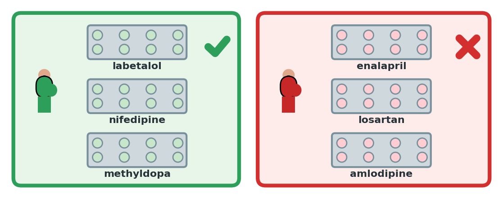
ඔබේ බෙහෙත් (සියලුදෙනා)
- සෑම දිනකම ගන්න. සනීපෙන් සිටියත්, නවත්වන්නවත් මඟ හරින්නවත් එපා.
- ගර්භනී: සාමාන්යයෙන් ලැබටලෝල්, නිෆෙඩිපින් සහ මෙතිල්ඩෝපා භාවිතා කරයි. මෙතිල්ඩෝපා නිසා නිදිමත ඇති විය හැක.
- ගර්භණීභාවයේදී ආරක්ෂිත නොවන බෙහෙත්: එනලාප්රිල්, ලොසාටන්, ඇම්ලොඩිපින්. ඒවා ගන්නා අතරේ ගැබ් ගත්තොත්, හෝ ගැබ් ගැනීමට සැලසුම් කරන්නේ නම්, වහාම ඔබේ වෛද්යවරයා වෙත යන්න.
- ප්රසූතියෙන් පසු ඔබේ වෛද්යවරයා ටැබ්ලට් වෙනස් කළ හැක. කිරි දීමේදී ආරක්ෂිත ඒවා මොනවාදැයි අසන්න.
- ඔබට ඇදුම තිබේ නම්, ඔබට ප්රතිකාර කරන සෑම වෛද්යවරයෙකුටම කියන්න. ඇදුම ඇති අය සඳහා ලැබටලෝල් වැළැක්විය යුතුයි.
- වේදනා නාශක: පැරසිටමෝල් භාවිතා කරන්න. ඩයික්ලොෆෙනැක් වැනි ඒවා ඔබේ වෛද්යවරයා කියන්නේ නම් මිස වළක්වන්න.
- උපත් පාලන පෙති සහ හෝමෝන ප්රතිකාර රුධිර පීඩනය ඉහළ දැමිය හැක. පටන් ගැනීමට පෙර ඔබට අධි රුධිර පීඩනය ඇති බව ඔබේ වෛද්යවරයාට කියන්න.
உங்கள் மருந்துகள் (எல்லோரும்)
- தினமும் எடுங்கள், நலமாக உணர்ந்தாலும். நிறுத்தவோ தவறவிடவோ வேண்டாம்.
- கர்ப்பிணி: பொதுவாகப் பயன்படுத்துவது லபெடலால், நிஃபெடிபின், மெதில்டோபா. மெதில்டோபா தூக்கக் கலக்கம் தரலாம்.
- கர்ப்பத்தில் பாதுகாப்பற்றவை: எனலாப்ரில், லோசார்டன், அம்லோடிபின். இவற்றை எடுக்கும்போது கர்ப்பமானாலோ, கர்ப்பமாகத் திட்டமிட்டாலோ உடனே உங்கள் மருத்துவரைப் பாருங்கள்.
- பிரசவத்திற்குப் பின் உங்கள் மருத்துவர் மாத்திரையை மாற்றலாம். தாய்ப்பாலூட்டும்போது எவை பாதுகாப்பானவை என்று கேளுங்கள்.
- உங்களுக்கு ஆஸ்துமா இருந்தால், உங்களுக்குச் சிகிச்சை அளிக்கும் ஒவ்வொரு மருத்துவரிடமும் சொல்லுங்கள். ஆஸ்துமாவில் லபெடலாலைத் தவிர்க்க வேண்டும்.
- வலி நிவாரணிகள்: பாரசிட்டமால் பயன்படுத்துங்கள். உங்கள் மருத்துவர் கூறாவிட்டால் டைக்ளோஃபெனாக் போன்றவற்றைத் தவிர்க்கவும்.
- கருத்தடை மாத்திரை, ஹார்மோன் சிகிச்சை இரத்த அழுத்தத்தை உயர்த்தலாம். தொடங்குவதற்கு முன் உங்களுக்கு உயர் இரத்த அழுத்தம் இருப்பதை உங்கள் மருத்துவரிடம் சொல்லுங்கள்.
Your medicines
- Take every day, even if you feel well. Do not stop or skip.
- Pregnant: the usual medicines are labetalol, nifedipine and methyldopa. Methyldopa can make you sleepy.
- Not safe in pregnancy: enalapril, losartan, amlodipine. If you take one and are pregnant, or planning pregnancy, see your doctor at once.
- After delivery, your doctor may change the tablet. Ask which are safe with breastfeeding.
- If you have asthma, tell every doctor. Labetalol should be avoided in asthma.
- Painkillers: use paracetamol. Avoid diclofenac and similar unless your doctor says.
- Contraceptive pill and hormone treatment can raise BP. Tell your doctor you have high BP before you start.
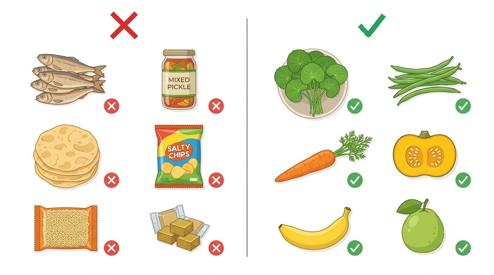
ආහාර සහ ජීවන රටාව (සියලුදෙනා)
- ලුණු අඩුවෙන් ගන්න. වියළි මාළු, ලුණු මාළු, අච්චාරු, පපඩම්, චිප්ස්, ඉන්ස්ටන්ට් නූඩ්ල්ස්, ස්ටොක් කියුබ්, සෝයා සෝස්, සෝස්, MSG, ටින් මාළු, සොසේජස්, ලුණු දැමූ කෑම සීමා කරන්න.
- මේසයේදී ලුණු එකතු නොකරන්න.
- වැඩිපුර ලුණු වෙනුවට රස සඳහා කරපිංචා, කුරුඳු, ඉඟුරු, ගම්මිරිස්, මිරිස් හෝ කරි කුඩු භාවිතා කරන්න.
- පලතුරු සහ එළවළු වැඩියෙන්: දිනකට වේල් 4-5 (ග්රෑම් 400 ක් පමණ).
- නිසි බර (පරිච්ඡේදය 5). අවම වශයෙන් මිනිත්තු 30 ක් දිනපතා ඇවිදින්න.
- කන්න: මාළු සහ රනිල කුලයට අයත් ඒවා (පරිප්පු, කඩල, සෝයා) වැඩියෙන්, හම් නැති කුකුළු මස්, අඩු මේද කිරි වීදුරු 1-2 ක්; රතු මස් සහ මේදය අඩුවෙන්.
- දුම්පානය, මත්පැන්, දුම්කොළ සහිත බුලත් එපා.
- ගර්භනී: වම් පැත්තට හැරී විවේක ගන්න.
உணவும் வாழ்க்கை முறையும் (எல்லோரும்)
- உப்பைக் குறையுங்கள். கருவாடு, உப்புமீன், ஊறுகாய், அப்பளம், சிப்ஸ், இன்ஸ்டன்ட் நூடில்ஸ், ஸ்டாக் கியூப், சோயா சாஸ், சாஸ்கள், MSG, டின் மீன், சாசேஜ், உப்பு தின்பண்டங்கள் ஆகியவற்றைக் குறைக்கவும்.
- மேசை உப்பைச் சேர்க்க வேண்டாம்.
- கூடுதல் உப்புக்குப் பதிலாக கறிவேப்பிலை, இலவங்கப்பட்டை, இஞ்சி, மிளகு, மிளகாய் அல்லது கறிப்பொடியைச் சுவைக்குப் பயன்படுத்துங்கள்.
- பழங்களும் காய்கறிகளும் அதிகம்: நாளொன்றுக்கு 4-5 பங்குகள் (சுமார் 400 கிராம்).
- சரியான எடை (அத்தியாயம் 5). தினமும் குறைந்தது 30 நிமிடம் நடக்கவும்.
- சாப்பிடுங்கள்: மீன் மற்றும் பருப்பு வகைகள் (பருப்பு, கொண்டைக்கடலை, சோயா) அதிகம், தோலில்லா கோழி, குறைந்த கொழுப்புப் பால் 1-2 குவளை; சிவப்பு இறைச்சியும் கொழுப்பும் குறைவாக.
- புகைபிடித்தல், மது, புகையிலை போட்ட வெற்றிலை வேண்டாம்.
- கர்ப்பிணி: இடது பக்கமாகச் சாய்ந்து ஓய்வெடுங்கள்.
Food and lifestyle
- Eat less salt. Limit dry fish, salted fish, pickles, papadam, crisps, instant noodles, stock cubes, soy sauce, sauces, MSG, canned fish, sausages, salted snacks.
- Do not add salt at the table.
- Use curry leaves, cinnamon, ginger, pepper, chilli or curry powder for taste instead of extra salt.
- More fruit and vegetables: 4-5 servings (about 400 g) a day.
- Healthy weight (Chapter 5). Walk daily, at least 30 minutes.
- No smoking, no alcohol, no tobacco betel.
- Eat: more fish and pulses (dhal, gram, soya), skinless chicken, 1-2 glasses of low-fat milk; less red meat and less fat.
- Pregnant: rest on your left side.
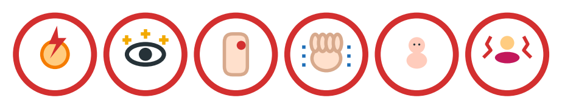
ප්රී-එක්ලැම්ප්සියා අනතුරු ඇඟවීම්: දැන්ම රෝහලට එන්න (ගර්භනී)
- පහව නොයන දරුණු ඔළු කැක්කුම.
- බොඳ පෙනීම හෝ ආලෝක ගැටිති.
- උදරයේ ඉහළ දකුණු පැත්තේ වේදනාව හෝ ගර්භණීභාවයේ අග කාලයේ වමනය.
- මුහුණ සහ අත් හදිසියේ ඉදිමීම.
- දරුවාගේ චලනය අඩුවීම.
- වලිප්පු හෝ සිතේ පටලැවිලි සහිත ස්වභාවය.
- මේවා ප්රසූතියෙන් පසුවද ආරම්භ විය හැක. සති 6 ඇතුළත මේවා තිබේ නම් පැමිණෙන්න.
- ප්රී-එක්ලැම්ප්සියා රෝහලේදී ප්රතිකාර කෙරේ. ප්රසූතිය තමයි සුවය.
ப்ரீ-எக்லாம்ப்சியா ஆபத்து அறிகுறிகள்: உடனே மருத்துவமனைக்கு வாருங்கள் (கர்ப்பிணி)
- நீங்காத கடுமையான தலைவலி.
- பார்வை மங்குதல் அல்லது ஒளிக்கீற்றுகள்.
- மேல் வலப்பக்க வயிற்று வலி அல்லது கர்ப்பத்தின் பிற்பகுதியில் வாந்தி.
- முகம், கைகள் திடீரென வீங்குதல்.
- குழந்தையின் அசைவு குறைதல்.
- வலிப்பு அல்லது குழப்பம்.
- இவை பிரசவத்திற்குப் பின்னரும் தொடங்கலாம். 6 வாரங்களுக்குள் இவை இருந்தால் வாருங்கள்.
- ப்ரீ-எக்லாம்ப்சியாவுக்கு மருத்துவமனையில் சிகிச்சை அளிக்கப்படும். பிரசவமே தீர்வு.
Pre-eclampsia danger signs: come to hospital NOW
- Severe headache that does not go away.
- Blurred vision or flashing lights.
- Pain in the upper right belly or vomiting in late pregnancy.
- Sudden swelling of face and hands.
- Baby moving less.
- Fits or confusion.
- These can start after delivery. Come in if you have them within 6 weeks.
- Pre-eclampsia is treated in hospital. Delivery is the cure.
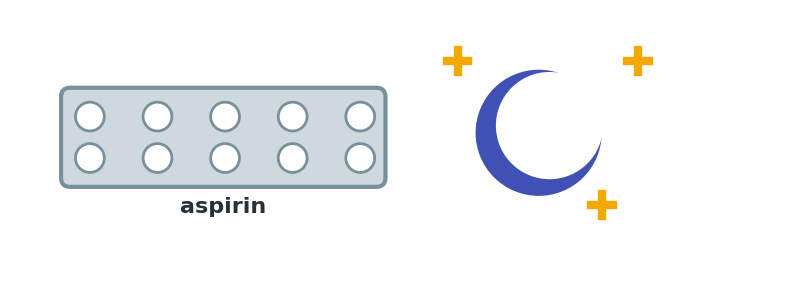
ඇස්ප්රීන් (ගර්භනී, නියම කළ විට)
- සමහර කාන්තාවන්ට ප්රී-එක්ලැම්ප්සියා වීමේ අවදානම අඩු කිරීමට ගර්භණීභාවයේ මුල සිට රාත්රියට අඩු මාත්රාවේ ඇස්ප්රීන් ලබා දේ.
- ඔබට ලියා දී ඇති මාත්රාව ගන්න.
- ඔබට ඇදුම, ගැස්ට්රයිටිස් හෝ ආමාශයේ තුවාල තිබේ නම්, හෝ වේදනා නාශකයකින් ප්රතික්රියාවක් වී ඇත්නම් ඔබේ වෛද්යවරයාට කියන්න.
ஆஸ்பிரின் (கர்ப்பிணி, பரிந்துரைத்தால்)
- சில பெண்களுக்கு ப்ரீ-எக்லாம்ப்சியா வரும் வாய்ப்பைக் குறைக்க ஆரம்பக் கர்ப்பத்திலிருந்து இரவில் குறைந்த அளவு ஆஸ்பிரின் தரப்படும்.
- உங்களுக்கு எழுதித் தரப்பட்ட அளவை எடுங்கள்.
- உங்களுக்கு ஆஸ்துமா, இரைப்பை அழற்சி அல்லது வயிற்றுப் புண் இருந்தால், அல்லது ஒரு வலி நிவாரணியால் எதிர்வினை ஏற்பட்டிருந்தால் உங்கள் மருத்துவரிடம் சொல்லுங்கள்.
Aspirin
- Some women are given low-dose aspirin at night from early pregnancy to lower the chance of pre-eclampsia.
- Take the dose written for you.
- Tell your doctor if you have asthma, gastritis or an ulcer, or a painkiller ever caused a reaction.
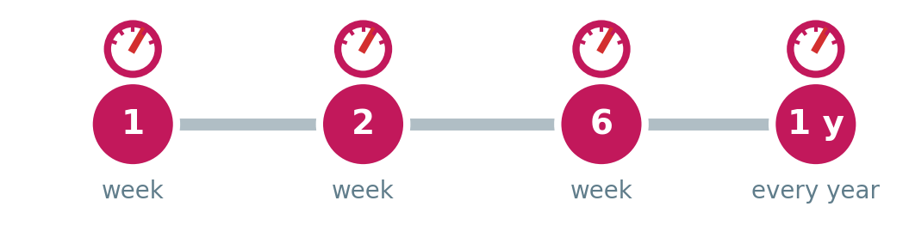
ප්රසූතියෙන් පසු (ගර්භනී)
- පළමු සතියේදී රුධිර පීඩනය ඉහළ යා හැක.
- ටැබ්ලට් ගන්නේ නම් සති 1-2 කදී නැවත පරීක්ෂා කරන්න. සෑම කෙනෙකුටම සති 6 කදී නැවත පරීක්ෂා කිරීම අවශ්ය වේ. මඟ නොහරින්න.
- ජීවිතාන්තය දක්වා වාර්ෂික රුධිර පීඩන පරීක්ෂාව. ගර්භණීභාවයේදී අධි රුධිර පීඩනය තිබූ කාන්තාවන්ට පසුව අධි රුධිර පීඩනය වැළඳීමේ අවදානම වැඩිය.
- ඊළඟ ගර්භණීභාවය: කලින්ම ඔබේ වෛද්යවරයාට කියන්න.
பிரசவத்திற்குப் பின் (கர்ப்பிணி)
- முதல் வாரத்தில் இரத்த அழுத்தம் உயரலாம்.
- மாத்திரை எடுத்தால் 1-2 வாரங்களில் மீள்பரிசோதனை. எல்லோருக்கும் 6 வாரங்களில் மீள்பரிசோதனை. தவறவிடாதீர்கள்.
- வாழ்நாள் முழுவதும் ஆண்டுதோறும் இரத்த அழுத்தப் பரிசோதனை. கர்ப்பத்தில் உயர் இரத்த அழுத்தம் இருந்த பெண்களுக்குப் பின்னர் உயர் இரத்த அழுத்தம் வரும் வாய்ப்பு அதிகம்.
- அடுத்த கர்ப்பம்: முன்கூட்டியே உங்கள் மருத்துவரைப் பாருங்கள்.
After delivery
- BP can rise in the first week.
- Review in 1-2 weeks if on tablets. Review at 6 weeks for all. Do not miss.
- Yearly BP check for life. Women who had high BP in pregnancy are more likely to get high BP later.
- Next pregnancy: see your doctor early.
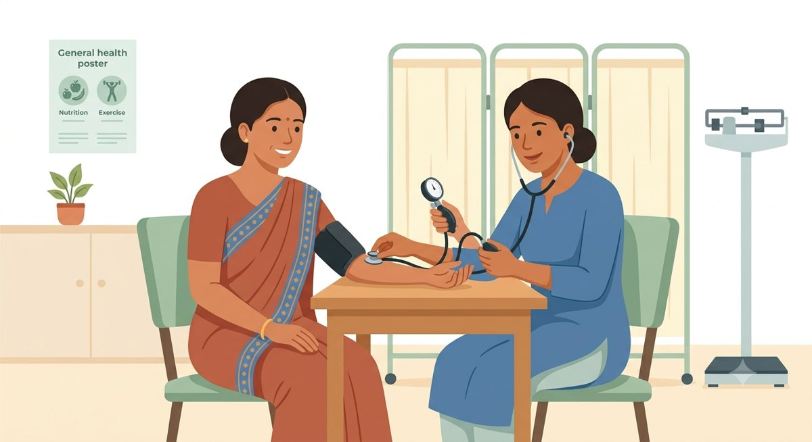
නාරිවේද කාන්තාවන්ගේ අධි රුධිර පීඩනය (ගර්භනී නොවන)
- බෙහෙත් සෑම දිනකම ගන්න. ඔබේ රුධිර පීඩන සටහන් පොත හෝ සායන පොත ගෙන එන්න.
- ශල්යකර්මයට පෙර: කණ්ඩායමට කියන්න. රුධිර පීඩන ටැබ්ලට් උපදෙස් දුන් පරිදි ගන්න.
- ගැබ් ගැනීමට සැලසුම් කරනවාද? පළමුව ඔබේ වෛද්යවරයා බලන්න. ලොසාටන්, එනලාප්රිල් සහ ඇම්ලොඩිපින් ගැබ් ගැනීමට පෙර වෙනස් කළ යුතුයි.
- ඔසප් නැවතීම රුධිර පීඩනය ඉහළ දැමිය හැක. සෑම වසරකම පරීක්ෂා කරන්න.
- ආඝාත ලක්ෂණ: මුහුණ ඇදවීම, අත දුර්වල වීම, කතාව අපැහැදිලි වීම. වහාම රෝහලට එන්න.
மகளிர் நோய் கிளினிக் பெண்களில் உயர் இரத்த அழுத்தம் (கர்ப்பமில்லாதவர்)
- மருந்துகளைத் தினமும் எடுங்கள். உங்கள் இரத்த அழுத்தக் குறிப்பேடு அல்லது கிளினிக் புத்தகத்தைக் கொண்டுவாருங்கள்.
- அறுவைச் சிகிச்சைக்கு முன்: குழுவிடம் சொல்லுங்கள். இரத்த அழுத்த மாத்திரைகளை அறிவுறுத்தியபடி எடுங்கள்.
- கர்ப்பமாகத் திட்டமிடுகிறீர்களா? முதலில் உங்கள் மருத்துவரைப் பாருங்கள். லோசார்டன், எனலாப்ரில், அம்லோடிபின் ஆகியவற்றைக் கர்ப்பமாவதற்கு முன் மாற்ற வேண்டும்.
- மாதவிடாய் நிறுத்தம் இரத்த அழுத்தத்தை உயர்த்தலாம். ஆண்டுதோறும் பரிசோதியுங்கள்.
- பக்கவாத அறிகுறிகள்: முகம் கோணுதல், கை பலவீனம், பேச்சுக் குளறல். உடனே மருத்துவமனைக்கு வாருங்கள்.
High BP in gynae women
- Take medicine every day. Bring your BP diary or clinic book.
- Before surgery: tell the team. Take BP tablets as instructed.
- Planning pregnancy? See your doctor first. Losartan, enalapril and amlodipine must be changed before you conceive.
- Menopause may raise BP. Check every year.
- Stroke signs: face drooping, arm weakness, slurred speech. Come to hospital at once.

මිථ්යා සහ සත්ය (සියලුදෙනා)
| මිථ්යාව | සත්යය |
|---|---|
| "රුධිර පීඩන ටැබ්ලට් මගේ දරුවාට හානි කරයි." | අනතුර වන්නේ පාලනය නොකළ රුධිර පීඩනයයි. ගර්භණීභාවයේදී භාවිතා කරන ටැබ්ලට් ආරක්ෂිතයි. |
| "මට සනීපයි, එබැවින් නවත්වන්න පුළුවන්." | අධි රුධිර පීඩනය බොහෝවිට ලක්ෂණ නොපෙන්වයි. |
| "ලුණු වලින් පමණයි වන්නේ." | හේතු බොහෝය. බෙහෙත් අවශ්යයි. |
| "පාද ඉදිමීම යනු ප්රී-එක්ලැම්ප්සියා." | සුළු පාද ඉදිමීම සුලභයි. ඔළු කැක්කුම සමඟ මුහුණ සහ අත් හදිසියේ ඉදිමීමයි ගැටලුව. |
கட்டுக்கதைகளும் உண்மைகளும் (எல்லோரும்)
| கட்டுக்கதை | உண்மை |
|---|---|
| "இரத்த அழுத்த மாத்திரைகள் என் குழந்தைக்குத் தீங்கு செய்யும்." | கட்டுப்படுத்தப்படாத இரத்த அழுத்தமே ஆபத்து. கர்ப்பத்தில் பயன்படுத்தும் மாத்திரைகள் பாதுகாப்பானவை. |
| "எனக்கு நலமாக இருக்கிறது, நிறுத்திவிடலாம்." | உயர் இரத்த அழுத்தம் பெரும்பாலும் அறிகுறி காட்டாது. |
| "உப்பினால் மட்டுமே வருகிறது." | பல காரணங்கள் உண்டு. மருந்து அவசியம். |
| "கால் வீக்கம் என்றால் ப்ரீ-எக்லாம்ப்சியா." | லேசான கால் வீக்கம் சாதாரணம். தலைவலியுடன் முகம், கைகள் திடீரென வீங்குவதே கவலைக்குரியது. |
Myths and facts
| Myth | Fact |
|---|---|
| "BP tablets will harm my baby." | Untreated BP is the danger. The tablets used in pregnancy are safe. |
| "I feel fine, so I can stop." | High BP often has no symptoms. |
| "Only salt causes it." | Many causes. Medicine is needed. |
| "Swollen feet mean pre-eclampsia." | Mild foot swelling is common. Sudden face and hand swelling with headache is the worry. |
තයිරොයිඩ් ග්රන්ථිය පිළිබඳ රෝග தைராய்டு நோய்கள் Chapter 3: Thyroid Disease
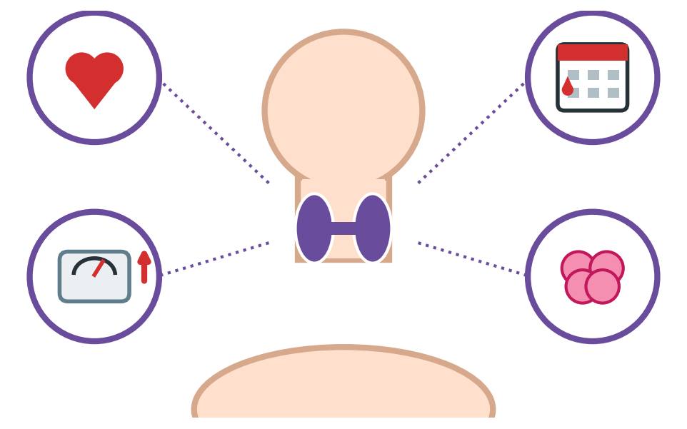
තයිරොයිඩ් ග්රන්ථිය යනු කුමක්ද?
- තයිරොයිඩ් ග්රන්ථිය බෙල්ලේ ඉදිරිපස ඇති කුඩා ග්රන්ථියකි.
- එය ශරීර ශක්තිය, හදවත ගැහෙන වේගය, ශරීරයේ බර, ඔසප් චක්රය සහ හැඟීම් පාලනය සඳහා බලපාන තයිරොයිඩ් හෝමෝනය නිපදවයි.
- ගර්භණීභාවයේදී එය ඔබේ දරුවාගේ මොළයේ වර්ධනයටද තයිරොයිඩ් හෝමෝනය අත්යවශ්යයි.
- තයිරොයිඩ් ග්රන්ථිය ආශ්රිත ප්රධාන රෝගී තත්ව දෙකකි: ග්රන්ථියේ අඩු ක්රියාකාරිත්වය සහ අධි ක්රියාකාරිත්වය.
தைராய்டு என்றால் என்ன? (எல்லோரும்)
- கழுத்தின் முன்புறத்தில் உள்ள சிறிய சுரப்பி.
- இது சக்தி, இதயத் துடிப்பு, எடை, மாதவிடாய், மனநிலை ஆகியவற்றுக்கான தைராய்டு ஹார்மோனை உற்பத்தி செய்கிறது.
- கர்ப்பத்தில் இது உங்கள் குழந்தையின் மூளை வளர்ச்சிக்கும் அவசியம்.
- இரண்டு பிரச்சினைகள்: குறைவாகச் சுரத்தல் மற்றும் அதிகமாகச் சுரத்தல்.
What is the thyroid?
- A small gland in the front of the neck.
- It makes thyroid hormone for energy, heart rate, weight, periods and mood.
- In pregnancy it is also needed for your baby's brain growth.
- Two problems: under-active and over-active.
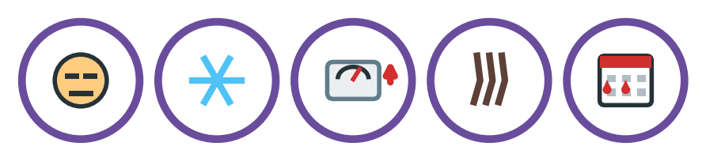
තයිරොයිඩ් ග්රන්ථියේ අඩු ක්රියාකාරිත්වය (ගැබිණි සහ ගැබිණි නොවන)
- ලක්ෂණ: තෙහෙට්ටුව, අසාමාන්ය සීතලක් දැනීම, ශරීරයේ බර වැඩිවීම, මලබද්ධය, සම වියළීම, හිසකෙස් ගැලවීම, මානසික අවපීඩනය, ඔසප් චක්රය අක්රමවත් වීම සහ ඔසප් වීමේදී අධික රුධිර වහනය.
- ගර්භණීභාවයේදී, ප්රතිකාර නොකළහොත් සිදුවන දේ: හදිසි ගබ්සා වීම්, නියමිත කාලයට පෙර නොමේරු කළල බිහිවීම සහ දරුවාගේ මොළයේ වර්ධනය දුර්වල වීම.
- ගර්භනී නොවන කාන්තාවන්ගේ: ඔසප් චක්රයේ සහ ගැබ් ගැනීමේ ගැටලු.
- ප්රතිකාර කිරීම පහසුයි.
குறைவாகச் சுரக்கும் தைராய்டு (எல்லோரும்)
- அறிகுறிகள்: சோர்வு, குளிர் உணர்வு, எடை கூடுதல், மலச்சிக்கல், வறண்ட தோல், முடி உதிர்தல், மனச்சோர்வு, அதிக அல்லது ஒழுங்கற்ற மாதவிடாய்.
- கர்ப்பத்தில், சிகிச்சை இல்லாவிட்டால்: கருச்சிதைவு, குறைப்பிரசவம், குழந்தையின் மூளை வளர்ச்சிக் குறைவு.
- கர்ப்பமில்லாத பெண்களில்: மாதவிடாய் மற்றும் கருத்தரித்தலில் பிரச்சினைகள்.
- சிகிச்சை எளிது.
Under-active thyroid
- Signs: tired, cold, weight gain, constipation, dry skin, hair loss, low mood, heavy or irregular periods.
- In pregnancy, untreated: miscarriage, early birth and poor baby brain growth.
- In women who are not pregnant: problems with periods and conceiving.
- Easy to treat.
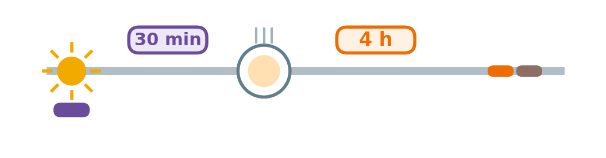
තයිරොක්සින් (ලෙවොතයිරොක්සින්) ටැබ්ලට්
- දිනපතා එකම වේලාවට එක් තයිරොක්සින් පෙත්තක්.
- භාවිතා කළ යුත්තේ: උදැසන අවදි වූ විගස, හිස් බඩ, වතුරත් සමඟ. තේ, කිරි හෝ ආහාර ගැනීමට පෙර මිනිත්තු 30 ක් රැඳී සිටින්න.
- යකඩ සහ කැල්සියම් ටැබ්ලට් පැය 4ක් පසුවූ විට ගන්න.
- ශරීරයට සුවයක් දැනුණු පමණින් බෙහෙත් නවත්වන්න එපා.
- ගර්භණීභාවයේදී සහ මව්කිරි දීමේදී තයිරොක්සින් බෙහෙත් භාවිතය ආරක්ෂිතයි.
தைராக்சின் (லெவோதைராக்சின்) மாத்திரைகள் (எல்லோரும்)
- தினமும் ஒரே நேரத்தில் ஒரு மாத்திரை.
- காலையில் எழுந்தவுடன், வெறும் வயிற்றில், தண்ணீருடன். தேநீர், பால், உணவுக்கு முன் 30 நிமிடம் காத்திருங்கள்.
- இரும்பு, கால்சியம் மாத்திரைகளை 4 மணி நேர இடைவெளியில் எடுங்கள்.
- நலமாக உணர்ந்ததும் நிறுத்த வேண்டாம்.
- கர்ப்பத்திலும் தாய்ப்பாலூட்டும்போதும் பாதுகாப்பானது.
Thyroxine (levothyroxine) tablets
- One tablet every day, same time.
- On waking, empty stomach, with water. Wait 30 minutes before tea, milk or food.
- Iron and calcium tablets: take them 4 hours apart.
- Do not stop when you feel better.
- Safe in pregnancy and breastfeeding.
තයිරොයිඩ් ග්රන්තිය සහ ගර්භණීභාවය
- ගැබ් ගැනීමට සැලසුම් කරනවාද? එසේනම් පළමුව තයිරොයිඩ් රුධිර පරීක්ෂාවක් (TSH) කරගන්න.
- තයිරොක්සින් ගන්නා ඔබ ගැබ් ගත් බව දැන ගත්තාද? වහාම ඒ බව ඔබේ වෛද්යවරයාට කියන්න. තයිරොක්සින් මාත්රාව සාමාන්යයෙන් වැඩි කළ යුතුයි.
- ගර්භණීභාවයේදී මසකට වරක් පමණ TSH පරීක්ෂාව කළ යුතුයි.
- ප්රසූතියෙන් පසු තයිරොක්සින් මාත්රාව සාමාන්යයෙන් නැවත අඩුකරයි. ප්රසූතියෙන් පසු සති 6කින් TSH පරීක්ෂාව කළ යුතුයි.
- දරුවාගේ තයිරොයිඩ් පරීක්ෂාව පළමු සතිය තුළ කරයි.
- මව එදිනෙදා ආහාර ගැනීමේදී අයඩීන් යෙදූ ලුණු ස්වල්ප වශයෙන් භාවිතා කරන්න (H-06 බලන්න). අමතර අයඩීන් ගැනීම අවශ්ය නොවේ.
தைராய்டும் கர்ப்பமும் (கர்ப்பிணி)
- கர்ப்பமாகத் திட்டமிடுகிறீர்களா? முதலில் தைராய்டு இரத்தப் பரிசோதனை (TSH) செய்யுங்கள்.
- தைராக்சின் எடுக்கும் நீங்கள் கர்ப்பமானதை அறிந்தீர்களா? உடனே உங்கள் மருத்துவரிடம் தெரிவியுங்கள். அளவை வழக்கமாக அதிகரிக்க வேண்டும்.
- கர்ப்பத்தில் ஏறத்தாழ 4 வாரங்களுக்கு ஒருமுறை TSH பரிசோதனை.
- பிரசவத்திற்குப் பின் அளவு பொதுவாக மீண்டும் குறைக்கப்படும். 6 வாரங்களில் TSH.
- குழந்தைக்கு முதல் வாரத்தில் தைராய்டு பரிசோதனை செய்யப்படும்.
- அயோடின் கலந்த உப்பை சிறிதளவு பயன்படுத்துங்கள் (H-06 ஐப் பார்க்கவும்). கூடுதல் அயோடின் எடுக்க வேண்டாம்.
Thyroid and pregnancy
- Planning pregnancy? Have a thyroid blood test (TSH) first.
- Take thyroxine and just found out you are pregnant? Tell your doctor at once. The dose usually has to go up.
- TSH test about every 4 weeks in pregnancy.
- After delivery, the dose usually goes back. TSH at 6 weeks.
- Your baby has a thyroid test in the first week.
- Use iodised salt, in small amounts (see H-06). Do not take extra iodine.
තයිරොයිඩ් ග්රන්තියේ අධි ක්රියාකාරිත්වය
- ලක්ෂණ: හදවත වේගයෙන් ගැහීම හෝ පපුවේ ගැස්ම දැනීම, වෙව්ලීම, අධික ලෙස දහඩිය දැමීම, අධික ලෙස උණුසුම දැනීම, එකවර බර අඩුවීම, කනස්සල්ල, මලපහ දියර ලෙස පිටවීම. ගර්භණී සමයේ මුල් අවධියේ අධික වමනය.
- ගර්භණී සමයේ මුල් අවධියේ තයිරොයිඩ් ග්රන්තියේ අධි ක්රියාකාරිත්වයට පොදු හේතුව: ගර්භණී හෝමෝන. සාමාන්යයෙන් ගර්භනී සමයේ අවසන් අවධිය වන විට නිසි අගයන්ට පැමිණේ.
- වෙනත් පොදු හේතු: ග්රේවස් රෝගය (Graves Disease). බෙල්ල ඉදිමීම, ඇස් ඉදිමී ඉදිරියට නෙරා ඒම.
- තත්වය පාලනය නොකිරීමේ ප්රතිඵල: හදිසි ගබ්සා වීම්, නියමිත කාලයට පෙර නොමේරු කළල බිහිවීම, අධි රුධිර පීඩනය.
அதிகமாகச் சுரக்கும் தைராய்டு (எல்லோரும்)
- அறிகுறிகள்: இதயம் வேகமாக அல்லது படபடவென்று துடித்தல், நடுக்கம், வியர்வை, வெப்ப உணர்வு, எடை குறைதல், பதட்டம், வயிற்றுப்போக்கு. ஆரம்பக் கர்ப்பத்தில் வாந்தி.
- ஆரம்பக் கர்ப்பத்தில் பொதுவான காரணம்: கர்ப்ப ஹார்மோன்கள். பொதுவாகத் தானாகச் சரியாகும்.
- மற்றொரு காரணம்: கிரேவ்ஸ் நோய். கண்கள் அல்லது கழுத்து வீங்குதல்.
- கட்டுப்படுத்தாவிட்டால்: கருச்சிதைவு, குறைப்பிரசவம், உயர் இரத்த அழுத்தம், இதயத்திற்குச் சுமை.
Over-active thyroid
- Signs: fast or thumping heart, shaking, sweating, feeling hot, weight loss, anxiety, diarrhoea. Vomiting in early pregnancy.
- Common cause in early pregnancy: pregnancy hormones. Usually settles.
- Another cause: Graves' disease. Swollen eyes or neck.
- Uncontrolled: miscarriage, early birth, high BP, heart strain.
තයිරොයිඩ් ග්රන්තියේ අධි ක්රියාකාරිත්වය (Hyperthyroidism) සඳහා ප්රතිකාර
- ප්රතිකාර - කාබිමසෝල් හෝ ප්රොපිල් තයෝයුරැසිල් (PTU). ගර්භනී සමයේ මුල් කාලයේ ඔබේ වෛද්යවරයා විසින් අවශ්ය වුවහොත් බෙහෙත් වෙනස් කරයි. ඔබ විසින් තනිව බෙහෙත් වෙනස් නොකරන්න.
- මීට අමතරව ප්රොප්රැනොලෝල් යන බෙහෙත ද සාමාන්යයෙන් නියම කරයි.
- ඔබට ඇදුම තිබේ නම් ඔබේ වෛද්යවරයාට කිව යුතුයි.
- බෙහෙත් නියම කළ පරිදිම ගන්න. සති 4-6 කට වරක් රුධිර TSH/T4 පරීක්ෂා කළ යුතුයි.
- පහත සඳහන් ලක්ෂණ ඇති වුවහොත් නොපමාව රෝහලට එන්න:
- උගුර රිදීම, උණ ගතිය, කටේ තුවාල දැමීම.
- ඇස් කහ වීම, තද පැහැති මුත්රා පිටවීම හෝ ඇඟේ කසන ගතිය.
- මෙම බෙහෙත් ගන්නා අතර මව්කිරි දීම ආරක්ෂිතයි. මව්කිරි දුන් වහාම බෙහෙත් ගන්න.
- හදිසි අවස්ථා: අධික උණ, හදවත ඉතා වේගයෙන් ගැසීම, මානසික ව්යාකූලත්වය (confusion). වහාම රෝහලට පැමිණෙන්න.
அதிகமாகச் சுரக்கும் தைராய்டுக்கான மாத்திரைகள் (எல்லோரும்)
- கார்பிமசோல் அல்லது PTU. ஆரம்பக் கர்ப்பத்தில் உங்கள் மருத்துவர் மாத்திரையை மாற்றலாம். நீங்களாக மாற்ற வேண்டாம்.
- பரிந்துரைத்தபடியே எடுங்கள். 4-6 வாரங்களுக்கு ஒருமுறை இரத்தப் பரிசோதனை.
- புரோப்ரனோலால் நடுக்கத்தைக் குறைக்கலாம். உங்களுக்கு ஆஸ்துமா இருந்தால் உங்கள் மருத்துவரிடம் சொல்லுங்கள்.
- பின்வருவன ஏற்பட்டால் அதே நாளில் மருத்துவமனைக்கு வாருங்கள்:
- தொண்டை வலி, காய்ச்சல் அல்லது வாய்ப்புண்.
- கண்கள் மஞ்சளாதல், அடர் நிறச் சிறுநீர் அல்லது அரிப்பு.
- தாய்ப்பாலூட்டல் பாதுகாப்பானது. பாலூட்டிய உடனே மாத்திரையை எடுங்கள்.
- அவசரநிலை: மிக அதிகக் காய்ச்சல், மிக வேகமான இதயத்துடிப்பு, குழப்பம். உடனே மருத்துவமனைக்கு வாருங்கள்.
Tablets for over-active thyroid
- Carbimazole or PTU. Your doctor may change the tablet in early pregnancy. Do not change it yourself.
- Take exactly as prescribed. Blood tests every 4-6 weeks.
- Propranolol may calm the shaking. Tell your doctor if you have asthma.
- Come to hospital the same day if you get:
- Sore throat, fever or mouth ulcers.
- Yellow eyes, dark urine or itching.
- Breastfeeding is safe. Take the tablet right after a feed.
- Emergency: very high fever, very fast heart, confusion. Come to hospital now.
ගර්භණි අයට ප්රසූතියෙන් පසු
- සමහර කාන්තාවන්ට ප්රසූතියෙන් පසු පළමු වසර තුළ තයිරොයිඩ් ගැටලු ඇති වේ. බොහෝවිට අධික තෙහෙට්ටුව හෝ පසු ප්රසව මානසික ව්යාකූලත්වය ("Baby blues") ලෙස මෙය පටලවා වටහා ගත හැක.
- ප්රසූතියෙන් පසු ඔබේ වෛද්යවරයාට පවසා TSH පරීක්ෂාවක් කරගන්න.
- ග්රේවස් රෝගය (Graves disease) ප්රසූතියෙන් පසු නැවත ඇතිවිය හැක. සති 6 කදී නැවත TSH පරීක්ෂාවක් කරගන්න.
- ඉන්පසු වසරකට වරක් TSH පරීක්ෂාවක් කරගන්න. අවශ්ය නම් වෛද්යවරයා බෙහෙත් දිගටම නියම කරයි.
பிரசவத்திற்குப் பின் (கர்ப்பிணி)
- சில பெண்களுக்கு முதல் ஆண்டில் தைராய்டு பிரச்சினைகள் வரும். பெரும்பாலும் சோர்வு அல்லது "பேபி புளூஸ்" என்று தவறாகக் கருதப்படும்.
- உங்கள் மருத்துவரிடம் சொல்லி TSH பரிசோதனை கேளுங்கள்.
- கிரேவ்ஸ் நோய் மீண்டும் தீவிரமடையலாம். 6 வாரங்களில் மீள்பரிசோதனை.
- ஆண்டுதோறும் TSH பரிசோதனை.
After delivery
- Some women get thyroid problems in the first year. Often mistaken for tiredness or "baby blues".
- Tell your doctor and ask for a TSH test.
- Graves' disease can flare. Review at 6 weeks.
- Yearly TSH check.
නාරිවේද කාන්තාවන්ගේ තයිරොයිඩ් රෝග (Gynecology patients)
- තයිරොයිඩ් ග්රන්තියේ අධි ක්රියාකාරිත්වය සහ අඩු ක්රියාකාරිත්වය යන දෙකම ඔසප් චක්රයේ වෙනස්කම් කරයි (අධික රුධිර වහනය, ඔසප් වීමේදී ඉතා අඩුවෙන් විදුවිම, ඔසප් වීම පිළිවෙලට නොවීම හෝ බොහෝ කාලයක් ඔසප් නොවීම) සහ ගැබ් ගැනීම දුෂ්කර කළ හැක.
- ඔසප් චක්රය වෙනස් වුවහොත් හෝ හේතුවක් නැතිව එකවර බර වැඩි/අඩු වුවහොත් ඔබේ වෛද්යවරයාට පවසන්න.
- ඔසප් වීම නැවතීමේ (ආර්තවහරණය) සහ තයිරොයිඩ් ග්රන්තිය ආශ්රිත රෝග ලක්ෂණ එකිනෙකට සමානයි. මෙය රුධිර පරීක්ෂාවෙන් වෙන්කර දැනගත හැක.
- ශල්යකර්මයට පෙර: ඔබේ එදිනෙදා ගන්නා බෙහෙත් රැගෙන එන්න. තයිරොක්සින් සුපුරුදු පරිදි ගන්න.
- ගැබ් ගැනීමට සැලසුම් කරනවාද? පළමුව ඔබේ වෛද්යවරයා හමුවන්න.
மகளிர் நோய் கிளினிக் பெண்களில் தைராய்டு (கர்ப்பமில்லாதவர்)
- குறைவாகவும் அதிகமாகவும் சுரக்கும் தைராய்டு இரண்டும் மாதவிடாயை மாற்றும் (அதிகம், குறைவு அல்லது நின்றுபோதல்) மற்றும் கருத்தரிப்பைக் கடினமாக்கலாம்.
- மாதவிடாய் மாறினாலோ, காரணமின்றி எடை கூடினாலோ குறைந்தாலோ உங்கள் மருத்துவரிடம் சொல்லுங்கள்.
- மாதவிடாய் நிறுத்த அறிகுறிகளும் தைராய்டு அறிகுறிகளும் ஒன்றுபோல் இருக்கும். இரத்தப் பரிசோதனை அவற்றைப் பிரித்துக் காட்டும்.
- அறுவைச் சிகிச்சைக்கு முன்: உங்கள் மருந்துகளைக் கொண்டுவாருங்கள். தைராக்சினை வழக்கம்போல எடுங்கள்.
- கர்ப்பமாகத் திட்டமிடுகிறீர்களா? முதலில் உங்கள் மருத்துவரைப் பாருங்கள்.
Thyroid in gynae women
- Under- and over-active thyroid change periods (heavy, light or missing) and can make it hard to conceive.
- Tell your doctor if periods change or you gain or lose weight without reason.
- Menopause and thyroid symptoms look alike. A blood test tells them apart.
- Before surgery: bring your medicines. Take thyroxine as usual.
- Planning pregnancy? See your doctor first.

තයිරොයිඩ් රෝග ගැන සමාජයේ පවතින මිථ්යා සහ එහි පිටුපස සත්ය
| මිථ්යාව | සත්යය |
|---|---|
| "තයිරොයිඩ් ටැබ්ලට් දරුවාට හානි කරයි." | ප්රතිකාර නොකළ තයිරොයිඩ් රෝග දරුවාට හානිකරයි. බෙහෙත් ආරක්ෂිතයි. |
| "මට සනීපයි, බෙහෙත් නවත්වන්න පුළුවන්." | ඔබේ වෛද්යවරයා කියන විට පමණක් නවත්වන්න. |
| "අමතර අයඩීන් මෙය සුව කරයි." | අයඩීන් යෙදූ ලුණු භාවිතා කරන්න. අමතර අයඩීන් හානිකර විය හැක. |
| "තයිරොයිඩ් රෝගයක් සමඟ මව්කිරි දෙන්න බෑ." | ඔබට මව්කිරි දිය හැක. |
கட்டுக்கதைகளும் உண்மைகளும் (எல்லோரும்)
| கட்டுக்கதை | உண்மை |
|---|---|
| "தைராய்டு மாத்திரைகள் குழந்தைக்குத் தீங்கு செய்யும்." | சிகிச்சையில்லாத தைராய்டே குழந்தைக்குத் தீங்கு. மாத்திரைகள் பாதுகாப்பானவை. |
| "எனக்கு நலமாக இருக்கிறது, நிறுத்திவிடலாம்." | உங்கள் மருத்துவர் சொல்லும்போது மட்டும் நிறுத்துங்கள். |
| "கூடுதல் அயோடின் இதைச் சரிசெய்யும்." | அயோடின் கலந்த உப்பைப் பயன்படுத்துங்கள். கூடுதல் அயோடின் தீங்கு தரலாம். |
| "தைராய்டு நோய் இருந்தால் தாய்ப்பால் கொடுக்க முடியாது." | நீங்கள் தாய்ப்பால் கொடுக்கலாம். |
Myths and facts
| Myth | Fact |
|---|---|
| "Thyroid tablets harm the baby." | Untreated thyroid harms the baby. The tablets are safe. |
| "I feel well, so I can stop." | Stop only when your doctor says. |
| "Extra iodine will fix it." | Use iodised salt. Extra iodine can be harmful. |
| "I cannot breastfeed with thyroid disease." | You can. |
ඇදුම ஆஸ்துமா Chapter 4: Asthma
ඇදුම යනු කුමක්ද? (සියලුදෙනා)
- ඇදුම දිගුකාලීන රෝගයකි. ශ්වසන නාල වල කුඩා නාලිකා ඉදිමීමට ලක්වී පටු වේ.
- රෝග ලක්ෂණ: කැස්ස (බොහෝවිට රාත්රියේදී), හුස්ම ගැනීමේදී හඬ පිටවීම (විසිල් ශබ්දය), හුස්ම හිරවීම, පපුවේ තදබව.
- රෝගය වැඩිවන අවස්ථා (උත්තේජක): දූවිලි, දුම, සීතල වාතය, ආසාදන, තද ගඳ සුවඳ, ව්යායාම.
ஆஸ்துமா என்றால் என்ன? (எல்லோரும்)
- நீண்டகால நோய். சுவாசக் குழாய்கள் வீங்கிச் சுருங்கும்.
- அறிகுறிகள்: இருமல் (பெரும்பாலும் இரவில்), மூச்சிரைப்பு (விசில் சத்தம்), மூச்சுத் திணறல், நெஞ்சு இறுக்கம்.
- தூண்டுதல்கள்: தூசி, புகை, குளிர்காற்று, தொற்றுகள், கடும் நெடி, உடற்பயிற்சி.
What is asthma?
- A long-term condition. The breathing tubes swell and narrow.
- Signs: cough (often at night), wheeze, breathlessness, tight chest.
- Triggers: dust, smoke, cold air, infections, strong smells, exercise.
ඇදුම සහ ගර්භණීභාවය (ගර්භනී)
- ඇදුම ඇති බොහෝ කාන්තාවන්ට නිරෝගී ගර්භණීභාවයක් ඇත.
- ඇදුම වැඩි වීමට, අඩුවීමට හෝ එලෙසම පැවතීමට හැක.
- නමුත් පාලනය නොකළ ඇදුම තත්ත්වය දරුවාට හානිකර විය හැක. දරුවාට ඔක්සිජන් සැපයීම අඩු වේ.
- ඇදුම බෙහෙත් ගර්භණීභාවයේදී සහ මව්කිරි දීමේදී ආරක්ෂිතයි. පාලනය නොකළ ඇදුම තත්ත්වයේ අවදානම වැඩිය.
ஆஸ்துமாவும் கர்ப்பமும் (கர்ப்பிணி)
- ஆஸ்துமா உள்ள பெரும்பாலான பெண்களுக்கு ஆரோக்கியமான கர்ப்பம் அமையும்.
- ஆஸ்துமா குறையலாம், அதிகரிக்கலாம் அல்லது அப்படியே இருக்கலாம்.
- கட்டுப்படுத்தப்படாத ஆஸ்துமாவே ஆபத்து. குழந்தைக்கு ஆக்சிஜன் குறையும்.
- ஆஸ்துமா மருந்துகள் கர்ப்பத்திலும் தாய்ப்பாலூட்டும்போதும் பாதுகாப்பானவை. சிகிச்சையில்லாத ஆஸ்துமாவின் ஆபத்தே அதிகம்.
Asthma and pregnancy
- Most women with asthma have a healthy pregnancy.
- Asthma may get better, worse or stay the same.
- Uncontrolled asthma is the danger. Less oxygen for the baby.
- Asthma medicines are safe in pregnancy and breastfeeding. The risk from untreated asthma is greater.
ඔබේ ඉන්හේලර් වර්ග දෙක (සියලුදෙනා)
| Asthalin (සහන දෙන - RELIEVER) | Seroflo (වළක්වන - PREVENTER) | |
|---|---|---|
| ක්රියා කරන ආකාරය | හුස්ම නාළ ඉක්මනින් විවර කරයි | ඉදිමීම අඩුකරයි (ක්රියාකිරීමට දින කිහිපයක් යයි) |
| භාවිතා කළ යුත්තේ | රෝග ලක්ෂණ ඇති විට පමණි | සෑම දිනකම, උදේ සහ සවස, සනීපෙන් සිටියත් |
| ඔබේ මාත්රාව | අවශ්ය විට ____ පෆ් | උදේ සහ සවස ____ පෆ් |
| භාවිතයෙන් පසු | කට සෝදා කෙළ ගසන්න | |
| වර්ණය | හෙදිය විසින් සැබෑ ඉන්හේලරය පෙන්වනු ලැබේ [CHECK] | හෙදිය විසින් සැබෑ ඉන්හේලරය පෙන්වනු ලැබේ [CHECK] |
- "Asthalin = රෝග ලක්ෂණ ඇතිවිට (හදිසි උත්සන්න වීම). Seroflo = සෑම දිනකම."
- දෙකම Aerolife ස්පේසරය සමඟ භාවිත කළ යුතුය.
- Seroflo මගින් හදිසි උත්සන්න වීම් නවත්වන්නේ නැත.
உங்கள் இரண்டு இன்ஹேலர்கள் (எல்லோரும்)
| Asthalin (நிவாரணி - RELIEVER) | Seroflo (தடுப்பான் - PREVENTER) | |
|---|---|---|
| வேலை | சுவாசக் குழாய்களை விரைவாகத் திறக்கும் | வீக்கத்தைத் தணிக்கும் (சில நாட்களில் செயல்படும்) |
| எப்போது | அறிகுறிகள் இருக்கும்போது மட்டும் | தினமும், காலையும் மாலையும், நலமாக இருந்தாலும் |
| உங்கள் அளவு | தேவைப்படும்போது ____ பஃப் | காலை, மாலை ____ பஃப் |
| பயன்படுத்திய பின் | வாயைக் கொப்பளித்துத் துப்புங்கள் | |
| நிறம் | செவிலியர் உண்மையான இன்ஹேலரைக் காண்பிப்பார் [CHECK] | செவிலியர் உண்மையான இன்ஹேலரைக் காண்பிப்பார் [CHECK] |
- "Asthalin = தாக்குதலின் போது. Seroflo = தினமும்."
- இரண்டும் Aerolife ஸ்பேசருடன்.
- Seroflo தாக்குதலை நிறுத்தாது.
Your two inhalers
| Asthalin (RELIEVER) | Seroflo (PREVENTER) | |
|---|---|---|
| Job | Opens the airways quickly | Calms swelling (works over days) |
| When | Only when you have symptoms | Every day, morning and evening, even when well |
| Your dose | ____ puffs when needed | ____ puffs, morning and evening |
| After use | Rinse mouth and spit | |
| Colour | Nurse shows real inhaler CHECK | Nurse shows real inhaler CHECK |
- "Asthalin = attack. Seroflo = every day."
- Both with the Aerolife spacer.
- Seroflo does not stop an attack.
ස්පේසරය සමඟ ඉන්හේලරය භාවිතා කිරීම (සියලුදෙනා)
- පියන ඉවත් කරන්න. ඉන්හේලරය සොලවන්න.
- එය ස්පේසරයට සවි කරන්න.
- කෙළින් හිඳ හෝ සිට ගෙන හුස්ම පිටකරන්න.
- මුඛ කොටස වටා ඔබේ තොල් තද කරගන්න.
- එක් පෆ් එකක් පමණක් ඔබන්න.
- සෙමින් ගැඹුරින් හුස්ම ගන්න. තත්පර 10 ක් හුස්ම රඳවා ගන්න. නැතහොත් ස්පේසරය හරහා සෙමින් 5 වතාවක් හුස්ම ගෙන පිටකරන්න.
- තවත් පෆ් එකක් අවශ්ය නම් තත්පර 30-60 ක් රැඳී සිටින්න. නැවත සොලවන්න. එකවර එක පෆ් එකක් පමණක් භාවිතා කරන්න.
- Seroflo පමණක්: භාවිතා කළ පසු කට සෝදා කෙළ ගසන්න.
- දෙකම භාවිතා කරන්නේ නම්: මුලින් Asthalin, මිනිත්තු 5 කට පසු Seroflo.
- අලුත් ඉන්හේලරයක් හෝ දිගු කාලයක් භාවිතා නොකළ එකක්: මුලින් වාතයට එක් වරක් හෝ දෙවරක් ඉසින්න (පත්රිකාවේ සඳහන් පරිදි).
- හෙදියට: සෑම පැමිණීමකදීම රෝගියාට භාවිතා කරන ආකාරය පෙන්වන ලෙස ඉල්ලන්න.
ஸ்பேசருடன் இன்ஹேலரைப் பயன்படுத்தும் முறை (எல்லோரும்)
- மூடியை அகற்றுங்கள். இன்ஹேலரை குலுக்குங்கள்.
- அதை ஸ்பேசரில் பொருத்துங்கள்.
- நிமிர்ந்து உட்காருங்கள் அல்லது நில்லுங்கள். மூச்சை வெளியே விடுங்கள்.
- வாய்ப்பகுதியைச் சுற்றி உதடுகளை இறுக்கமாக மூடுங்கள்.
- ஒரே ஒரு பஃப் மட்டும் அழுத்துங்கள்.
- மெதுவாக ஆழமாக உள்ளிழுங்கள். 10 விநாடி மூச்சை நிறுத்துங்கள். அல்லது ஸ்பேசர் வழியாக மெதுவாக 5 முறை உள்ளிழுத்து வெளிவிடுங்கள்.
- இன்னொரு பஃப் தேவையா? 30-60 விநாடி காத்திருங்கள். மீண்டும் குலுக்குங்கள். ஒரு நேரத்தில் ஒரு பஃப் மட்டும்.
- Seroflo மட்டும்: வாயைக் கொப்பளித்துத் துப்புங்கள்.
- இரண்டையும் பயன்படுத்தினால்: முதலில் Asthalin, 5 நிமிடம் கழித்து Seroflo.
- புதிய இன்ஹேலர் அல்லது நீண்ட நாள் பயன்படுத்தாதது: முதலில் காற்றில் ஒன்றிரண்டு முறை தெளியுங்கள் (துண்டுப்பிரசுரத்தில் உள்ளபடி).
- செவிலியருக்கு: ஒவ்வொரு வருகையிலும் அவரைச் செய்து காட்டச் சொல்லுங்கள்.
Using the inhaler with the spacer
- Remove the cap. Shake the inhaler.
- Fit it into the spacer.
- Sit or stand straight. Breathe out.
- Seal your lips around the mouthpiece.
- Press ONE puff.
- Breathe in slowly and deeply. Hold 10 seconds. Or breathe slowly in and out 5 times through the spacer.
- Another puff? Wait 30-60 seconds. Shake again. One puff at a time.
- Seroflo: rinse your mouth and spit.
- Using both: Asthalin first, then Seroflo 5 minutes later.
- New inhaler or unused for a while: spray once or twice into the air first (as the leaflet says).
- Nurse: ask her to show you every visit.
ඉන්හේලරය අවසන් වන විට හඳුනාගැනීම (සියලුදෙනා)
- අලුත් ඉන්හේලරයක පෆ් 200 ක් පමණ ඇත. පෙට්ටිය බලන්න. පරීක්ෂණ ඉසීම්ද (Trials) ගණන් ගැනේ.
- මාත්රා ගණකයක් (dose counter) තිබේ නම්: 0 ට ළඟා වන විට මාරු කරන්න.
- ගණකයක් නොමැති නම්:
- ආරම්භ කළ දිනය ටින් එකේ ලියන්න.
- දිනකට පෆ් ගණන x දින ගණන. උදාහරණය: දිනකට පෆ් 4 ක්, පෆ් 200 = දින 50.
- අවසන් වන දිනය ටින් එකේ ලියන්න.
- සතියකට පමණ පෙර අලුත් එකක් ඉල්ලන්න.
- වතුරේ පා කර බලන්න එපා. එය විශ්වාසදායක නොවේ.
இன்ஹேலர் கிட்டத்தட்ட காலியாவதை அறிதல் (எல்லோரும்)
- புதிய இன்ஹேலரில் சுமார் 200 பஃப்கள் உள்ளன. பெட்டியைப் பாருங்கள். சோதனைத் தெளிப்புகளும் எண்ணப்படும்.
- அளவுக் கணக்கி (dose counter) இருந்தால்: 0 ஐ நெருங்கும்போது மாற்றுங்கள்.
- கணக்கி இல்லாவிட்டால்:
- தொடங்கிய தேதியை டப்பாவில் எழுதுங்கள்.
- நாளொன்றுக்குப் பஃப்கள் x நாட்கள். எடுத்துக்காட்டு: நாளொன்றுக்கு 4 பஃப், 200 பஃப் = 50 நாட்கள்.
- முடியும் தேதியை டப்பாவில் எழுதுங்கள்.
- ஒரு வாரத்திற்கு முன்பே புதியது கேளுங்கள்.
- தண்ணீரில் மிதக்கவிட்டுப் பார்க்க வேண்டாம். அது நம்பகமானதல்ல.
When the inhaler is nearly empty
- A new inhaler has about 200 puffs. Check the box. Test sprays count.
- If it has a dose counter: replace when it nears 0.
- If it has NO counter:
- Write the start date on the canister.
- Puffs a day x days. Example: 4 puffs a day, 200 puffs = 50 days.
- Write the finish date on the canister.
- Ask for a new one about 1 week before.
- Do not float it in water. It is unreliable.
පිරිසිදු කිරීම සහ වියළීම (සියලුදෙනා)
ස්පේසරය (සතියකට වරක්):
- ස්පේසරය ගලවන්න.
- උණු වතුරේ ඩිෂ් වොෂ් දියර බින්දු කිහිපයක් දමා මිනිත්තු 15 ක් පොඟවන්න.
- ඇතුළත අතුල්ලන්න එපා. තුවායකින් වියළීම සිදු නොකරන්න (ස්ථිතික විද්යුත් නිසා).
- රාක්කයක් මත වාතයෙන් වියළන්න. වියළුණු පසු නැවත සවි කරන්න.
ඉන්හේලර් කවචය (සතියකට වරක්):
- ලෝහ ටින් එක ඉවතට ගන්න.
- ප්ලාස්ටික් කවචය ගලා යන වතුරෙන් සෝදන්න. ටින් එක කිසිවිටෙක වතුරේ නොදමන්න.
- කවචය වියළා, ටින් එක නැවත සවි කරන්න.
- ස්පේසරය ඉරිතැලී ඇත්නම් මාරු කරන්න.
சுத்தம் செய்தலும் உலர்த்தலும் (எல்லோரும்)
ஸ்பேசர் (வாரம் ஒருமுறை):
- அதைப் பிரித்தெடுங்கள்.
- வெதுவெதுப்பான நீரில் சில துளி பாத்திரம் கழுவும் திரவம் விட்டு 15 நிமிடம் ஊறவையுங்கள்.
- உட்புறத்தைத் தேய்க்க வேண்டாம். துணியால் துடைக்க வேண்டாம் (நிலை மின்சாரம் காரணமாக).
- ஒரு தட்டில் காற்றில் உலர விடுங்கள். உலர்ந்த பின் மீண்டும் பொருத்துங்கள்.
இன்ஹேலர் உறை (வாரம் ஒருமுறை):
- உலோக டப்பாவை வெளியே எடுங்கள்.
- பிளாஸ்டிக் உறையை ஓடும் நீரில் கழுவுங்கள். டப்பாவை ஒருபோதும் தண்ணீரில் போடாதீர்கள்.
- உறையை உலர்த்தி, டப்பாவை மீண்டும் வையுங்கள்.
- ஸ்பேசரில் விரிசல் இருந்தால் மாற்றுங்கள்.
Cleaning and drying
Spacer (once a week):
- Take it apart.
- Soak in warm water with a few drops of dish-washing liquid, 15 minutes.
- Do not rub inside. Do not towel dry (static).
- Air-dry on a rack. Put back together when dry.
Inhaler case (once a week):
- Take the metal canister out.
- Rinse the plastic case under running water. Never put the canister in water.
- Dry the case, put the canister back.
- Replace the spacer if cracked.
ඔබේ ඇදුම රථ සංඥා සැලැස්ම (Traffic light plan) (සියලුදෙනා)
| කලාපය | ඔබට දැනෙන ආකාරය | කළ යුත්තේ |
|---|---|---|
| කොළ | කැස්සක් හෝ හුස්ම ගැනීමේදී හඬක් පිටවීම නැත | සෑම දිනකම Seroflo |
| කහ | කැස්ස, හුස්ම ගැනීමේදී හඬක් පිටවීම, පපුවේ තදබව, රාත්රියේ ඇහැරීම, සුපුරුදු ප්රමාණයට වඩා Asthalin අවශ්ය වීම | ස්පේසරයෙන් Asthalin භාවිතා කරන්න. එදිනම සායනයට එන්න. |
| රතු | හුස්ම ගැනීමේ අපහසුතාවය නිසා වාක්යයක් සම්පූර්ණ කළ නොහැක, තොල් නිල් වීම, Asthalin වලින් සහනයක් නැත, නිදිමත (drowsy) | රෝහලට යන අතරතුර Asthalin පෆ් එකින් එක භාවිතා කරන්න. වහාම රෝහලට එන්න. 1990 අමතන්න. |
- රතු කලාපයේදී ඔබ තනිවම වාහනය පදවන්න එපා.
உங்கள் ஆஸ்துமா போக்குவரத்து விளக்குத் திட்டம் (எல்லோரும்)
| மண்டலம் | நீங்கள் உணர்வது | செய்ய வேண்டியது |
|---|---|---|
| பச்சை | இருமல் அல்லது மூச்சிரைப்பு இல்லை | தினமும் Seroflo |
| மஞ்சள் | இருமல், மூச்சிரைப்பு, நெஞ்சு இறுக்கம், இரவில் விழிப்பு, வழக்கத்தை விட அதிகமாக Asthalin தேவைப்படுதல் | ஸ்பேசர் வழியாக Asthalin. அதே நாளில் கிளினிக்கிற்கு வாருங்கள். |
| சிவப்பு | வாக்கியத்தை முடிக்க முடியாது, உதடுகள் நீலமாதல், Asthalin ஆல் நிவாரணம் இல்லை, தூக்கக் கலக்கம் | மருத்துவமனைக்குச் செல்லும்போது Asthalin பஃப்களை ஒவ்வொன்றாக. உடனே வாருங்கள். 1990 ஐ அழையுங்கள். |
- சிவப்பு மண்டலத்தில் நீங்களே வாகனம் ஓட்ட வேண்டாம்.
Your asthma traffic-light plan
| Zone | How you feel | What to do |
|---|---|---|
| GREEN | No cough or wheeze | Seroflo every day |
| AMBER | Cough, wheeze, tight chest, waking at night, needing Asthalin more than usual | Asthalin via spacer. Come to the clinic that day. |
| RED | Cannot finish a sentence, blue lips, no relief from Asthalin, drowsy | Asthalin puffs one at a time while going to hospital NOW. Call 1990. |
- Never drive yourself in the red zone.
හදිසි උත්සන්න වීම් ඇතිවන උත්තේජක (Triggers) මඟහරවා ගැනීම (සියලුදෙනා)
| උත්තේජකය (Trigger) | කළ යුත්තේ |
|---|---|
| දූවිලි, දූවිලි මයිටාවන් | තෙත රෙදිවලින් පිස දමන්න, වියළිව අතුගාන්න එපා. මොප් කරන්න. ඇඳ ඇතිරිලි සතිපතා සෝදා, අව්වේ වියළන්න. |
| දුම | ගෙදර දුම්පානය වළක්වන්න. දර දුම, සුවඳ දුම්, මදුරු දුම්, කසල පුළුස්සීම වළක්වන්න. |
| තෙතමනය සහ දිලීර | වතුර කාන්දු අලුත්වැඩියා කරන්න. කාමරයට වාතය ලබා දෙන්න. |
| සුරතල් සතුන් සහ කුරුල්ලන් | නිදන කාමරයෙන් පිටත තබන්න. |
| තද ගඳ සුවඳ | සුවඳ විලවුන්, තීන්ත, භූමිතෙල්, බ්ලීච්, ස්ප්රේ වළක්වන්න. |
| සීතල වාතය | නාසය සහ මුඛය වසා ගන්න. |
| සෙම්ප්රතිශ්යාව සහ ෆ්ලූ | නිතර අත් සෝදන්න. සෙම්ප්රතිශ්යාවට මුලදීම ප්රතිකාර කරන්න. |
| වේදනා නාශක | ඇස්ප්රීන් සහ ඩයික්ලොෆෙනැක් ඇදුම උත්තේජනය කළ හැක. පැරසිටමෝල් භාවිතා කරන්න. |
உங்கள் தூண்டுதல்களைத் தவிர்த்தல் (எல்லோரும்)
| தூண்டுதல் | செய்ய வேண்டியது |
|---|---|
| தூசி, தூசிப் பூச்சிகள் | ஈரத் துணியால் துடையுங்கள், உலர்ந்து கூட்டாதீர்கள். படுக்கை விரிப்புகளை வாரந்தோறும் துவைத்து வெயிலில் உலர்த்துங்கள். |
| புகை | வீட்டில் புகைபிடிக்கக் கூடாது. விறகு அடுப்புப் புகை, ஊதுபத்தி, கொசுவர்த்திச் சுருள், குப்பை எரித்தல் ஆகியவற்றைத் தவிர்க்கவும். |
| ஈரப்பதம், பூஞ்சை | கசிவுகளைச் சரிசெய்யுங்கள். அறையில் காற்றோட்டம் வையுங்கள். |
| செல்லப் பிராணிகள், பறவைகள் | படுக்கையறைக்கு வெளியே வையுங்கள். |
| கடும் நெடி | வாசனைத் திரவியம், பெயிண்ட், மண்ணெண்ணெய், ப்ளீச், ஸ்பிரே ஆகியவற்றைத் தவிர்க்கவும். |
| குளிர்காற்று | மூக்கையும் வாயையும் மூடிக்கொள்ளுங்கள். |
| சளி, காய்ச்சல் | கைகளைக் கழுவுங்கள். சளிக்கு முன்கூட்டியே சிகிச்சை எடுங்கள். |
| வலி நிவாரணிகள் | ஆஸ்பிரின், டைக்ளோஃபெனாக் ஆஸ்துமாவைத் தூண்டலாம். பாரசிட்டமால் பயன்படுத்துங்கள். |
Avoiding triggers
| Trigger | What to do |
|---|---|
| Dust, dust mites | Damp-wipe, do not sweep dry. Wash bedding weekly, dry in the sun. |
| Smoke | No smoking at home. Avoid firewood smoke, incense, mosquito coils, burning rubbish. |
| Damp and mould | Fix leaks. Air the room. |
| Pets and birds | Keep out of the bedroom. |
| Strong smells | Avoid perfume, paint, kerosene, bleach, sprays. |
| Cold air | Cover your nose and mouth. |
| Colds and flu | Wash hands. Treat colds early. |
| Painkillers | Aspirin and diclofenac can trigger asthma. Use paracetamol. |
දිගුකාලීන පාලනය වැදගත් වන්නේ ඇයි (සියලුදෙනා)
- Seroflo නිහඬව ක්රියා කරයි. එය ක්රියා කරන බව ඔබට නොදැනේ.
- ඔබට සනීපයක් දැනුණත් හුස්ම නාළ ඉදිමී පවතී.
- ඔබ නැවැත්වුවහොත් හදිසි උත්සන්න වීම් ඇති විය හැක.
- හොඳ පාලනය: හදිසි උත්සන්න වීම් අඩුවීම, හොඳ නින්ද, සහ ගර්භණීභාවයේදී දරුවාට වැඩි ඔක්සිජන් ප්රමාණයක් ලැබීම.
- ස්ටෙරොයිඩ් ඉන්හේලර් භාවිතා කරන්නේ ඉතා කුඩා මාත්රාවකි, එය ස්ටෙරොයිඩ් ටැබ්ලටවලට වඩා බෙහෙවින් වෙනස්.
- Asthalin වැඩිපුර අවශ්ය වීම අනතුරු ඇඟවීමකි. වහාම සායනයට එන්න.
நீண்டகாலக் கட்டுப்பாடு ஏன் முக்கியம் (எல்லோரும்)
- Seroflo அமைதியாக வேலை செய்கிறது. அது வேலை செய்வது உங்களுக்குத் தெரியாது.
- நலமாக உணர்ந்தாலும் சுவாசக் குழாய்கள் வீங்கியே இருக்கும்.
- நிறுத்தினால் தாக்குதல் வரலாம்.
- நல்ல கட்டுப்பாடு: குறைவான தாக்குதல்கள், நல்ல தூக்கம், கர்ப்பத்தில் குழந்தைக்கு அதிக ஆக்சிஜன்.
- ஸ்டீராய்டு இன்ஹேலர்கள் மிகச் சிறிய அளவே, அவை ஸ்டீராய்டு மாத்திரைகளிலிருந்து மிகவும் வேறுபட்டவை.
- Asthalin அதிகம் தேவைப்படுவது எச்சரிக்கை. கிளினிக்கிற்கு வாருங்கள்.
Why long-term control matters
- Seroflo works quietly. You do not feel it work.
- Airways stay swollen even when you feel fine.
- If you stop, an attack can come.
- Good control: fewer attacks, better sleep, and in pregnancy, more oxygen for your baby.
- Steroid inhalers use a tiny dose and are very different from steroid tablets.
- Needing Asthalin more often is a warning. Come to the clinic.
ප්රසූතිය, ශල්යකර්ම සහ මව්කිරි දීම (ගර්භනී, ගර්භනී නොවන)
- ඔබේ ඉන්හේලර් සහ ස්පේසරය රෝහලට රැගෙන එන්න.
- වෛද්යවරයාට සහ නිර්වින්දන වෛද්යවරයාට ඔබට ඇදුම ඇති බව පවසන්න. ප්රසූතියේදී සහ ශල්යකර්මවලදී භාවිතා කරන සමහර බෙහෙත් ඇදුම උත්තේජනය කළ හැක.
- ශල්යකර්මයට පෙර සහ පසුවද ඔබේ ඉන්හේලර් භාවිතා කරන්න.
- සියලුම ඇදුම ඉන්හේලර් මව්කිරි දීමේදී ආරක්ෂිතයි.
பிரசவம், அறுவைச் சிகிச்சை, தாய்ப்பாலூட்டல் (கர்ப்பிணி, கர்ப்பமில்லாதவர்)
- உங்கள் இன்ஹேலர்களையும் ஸ்பேசரையும் மருத்துவமனைக்குக் கொண்டுவாருங்கள்.
- மருத்துவரிடமும் மயக்க மருத்துவரிடமும் உங்களுக்கு ஆஸ்துமா இருப்பதைச் சொல்லுங்கள். பிரசவத்திலும் அறுவைச் சிகிச்சைகளிலும் பயன்படுத்தும் சில மருந்துகள் ஆஸ்துமாவைத் தூண்டலாம்.
- அறுவைச் சிகிச்சைக்கு முன்னும் பின்னும் உங்கள் இன்ஹேலர்களைத் தொடர்ந்து பயன்படுத்துங்கள்.
- எல்லா ஆஸ்துமா இன்ஹேலர்களும் தாய்ப்பாலூட்டும்போது பாதுகாப்பானவை.
Labour, surgery and breastfeeding
- Bring your inhalers and spacer to the hospital.
- Tell the doctor and anaesthetist you have asthma. Some medicines used at delivery and in surgery can trigger asthma.
- Keep using your inhalers before and after an operation.
- All asthma inhalers are safe while breastfeeding.
ඇදුම රෝගය ගැන සමාජයේ පවතින මිථ්යා සහ එහි පිටුපස සත්ය (සියලුදෙනා)
| මිථ්යාව | සත්යය |
|---|---|
| "ස්ටෙරොයිඩ් ඉන්හේලර් මගේ දරුවාට හානි කරයි." | පාලනය නොකළ ඇදුම අනතුරුදායකය. මාත්රාව ඉතා කුඩායි. |
| "ඉන්හේලර් ඇබ්බැහි කරයි." | නැත. |
| "සනීප වූ විට නවත්වන්න පුළුවන්." | ඇදුමට දිනපතා පාලනයක් අවශ්යයි. |
| "රිලීවර් එක වැඩිපුර භාවිතා කිරීම කමක් නැහැ." | එය අනතුරු ඇඟවීමකි. වහාම සායනයට එන්න. |
கட்டுக்கதைகளும் உண்மைகளும் (எல்லோரும்)
| கட்டுக்கதை | உண்மை |
|---|---|
| "ஸ்டீராய்டு இன்ஹேலர்கள் என் குழந்தைக்குத் தீங்கு செய்யும்." | கட்டுப்படுத்தப்படாத ஆஸ்துமாவே ஆபத்து. அளவு மிகச் சிறியது. |
| "இன்ஹேலர்கள் பழக்கமாகிவிடும்." | இல்லை. |
| "நலமானதும் நிறுத்திவிடலாம்." | ஆஸ்துமாவுக்குத் தினசரிக் கட்டுப்பாடு தேவை. |
| "நிவாரணியை அதிகம் பயன்படுத்துவது பரவாயில்லை." | அது ஒரு எச்சரிக்கை. கிளினிக்கிற்கு வாருங்கள். |
Myths and facts
| Myth | Fact |
|---|---|
| "Steroid inhalers will harm my baby." | Uncontrolled asthma is the danger. The dose is tiny. |
| "Inhalers are addictive." | No. |
| "I can stop when I feel well." | Asthma needs daily control. |
| "Using the reliever a lot is fine." | It is a warning. Come to the clinic. |
ස්ථුලතාවය සහ නිසි බර உடல் பருமனும் ஆரோக்கிய எடையும் Chapter 5: Obesity and Healthy Weight
ස්ථුලතාවය යනු කුමක්ද? (සියලුදෙනා)
- ඔබේ සෞඛ්යයට සරිලන ප්රමාණයට වඩා වැඩි ශරීර මේදයක් තැන්පත්වී තිබීමයි.
- BMI සහ ඉඟටියේ වට ප්රමාණයෙන් ස්ථුලතාවය මනිනු ලැබේ.
- දකුණු ආසියානු කාන්තාවන්ට අඩු BMI අගයකදී සෞඛ්ය ගැටලු ඇති වන බැවින් අපි ආසියානු සීමාවන් භාවිතා කරමු.
உடல் பருமன் என்றால் என்ன? (எல்லோரும்)
- உங்கள் ஆரோக்கியத்திற்குத் தேவைக்கு அதிகமான உடல் கொழுப்பு இருப்பது.
- BMI மற்றும் இடுப்பளவால் அளக்கப்படும்.
- தென்னாசியப் பெண்களுக்குக் குறைவான BMI இலேயே உடல்நலப் பிரச்சினைகள் தொடங்குவதால் நாங்கள் ஆசிய எல்லைகளைப் பயன்படுத்துகிறோம்.
What is obesity?
- Too much body fat for your health.
- Measured with BMI and waist size.
- South Asian women get health problems at a lower BMI, so we use Asian cut-offs.
ඔබේ BMI අගය (සියලුදෙනා)
BMI = බර (kg) / උස (m) / උස (m). උදාහරණය: 68 kg, 1.55 m: 68 / 1.55 / 1.55 = 28.3.
| BMI | කාණ්ඩය (ආසියානු සීමාවන්) [CHECK] |
|---|---|
| 18.5 ට අඩු | අඩු බර |
| 18.5 සිට 22.9 දක්වා | නිරෝගී |
| 23 සිට 24.9 දක්වා | අධි බර |
| 25 හෝ ඊට වැඩි | ස්ථුලතාවය |
- කාන්තාවන්ගේ ඉඟටිය සෙන්ටිමීටර 80 හෝ ඊට වැඩි නම් අවදානම වැඩිය. (ගර්භණීභාවයේදී නොමැනේ.)
- ගර්භණීභාවයේදී BMI ගණනය කරන්නේ ඔබේ පළමු පැමිණීමේ බරෙනි.
உங்கள் BMI (எல்லோரும்)
BMI = எடை (kg) / உயரம் (m) / உயரம் (m). எடுத்துக்காட்டு: 68 kg, 1.55 m: 68 / 1.55 / 1.55 = 28.3.
| BMI | வகை (ஆசிய எல்லைகள்) [CHECK] |
|---|---|
| 18.5 க்குக் குறைவு | எடை குறைவு |
| 18.5 முதல் 22.9 வரை | ஆரோக்கியம் |
| 23 முதல் 24.9 வரை | அதிக எடை |
| 25 அல்லது அதற்கு மேல் | உடல் பருமன் |
- பெண்களுக்கு இடுப்பளவு 80 செ.மீ. அல்லது அதற்கு மேல் இருந்தால் ஆபத்து அதிகம். (கர்ப்பத்தில் அளக்கப்படுவதில்லை.)
- கர்ப்பத்தில், BMI உங்கள் முதல் வருகையின் எடையிலிருந்து கணக்கிடப்படுகிறது.
Your BMI
BMI = weight (kg) / height (m) / height (m). Example: 68 kg, 1.55 m: 68 / 1.55 / 1.55 = 28.3.
| BMI | Group (Asian cut-offs) CHECK |
|---|---|
| Under 18.5 | Underweight |
| 18.5 to 22.9 | Healthy |
| 23 to 24.9 | Overweight |
| 25 or more | Obese |
- Waist 80 cm or more in women = higher risk. (Not measured in pregnancy.)
- In pregnancy, BMI is worked out from your first-visit weight.
බර වැදගත් වන්නේ ඇයි (සියලුදෙනා)
| ගර්භනී | ගර්භනී නොවන |
|---|---|
| ගර්භනී දියවැඩියාව | දියවැඩියාව සහ අධි රුධිර පීඩනය |
| අධි රුධිර පීඩනය සහ ප්රී-එක්ලැම්ප්සියා | අක්රමවත් ඔසප් වීම, PMOS, ගැබ් ගැනීමේ අපහසුව |
| රුධිර කැටි ගැසීම | ගර්භාෂ අභ්යන්තර පටල පිළිකා |
| සිසේරියන්, තුවාල ආසාදන | අවදානම් සහිත ශල්යකර්ම සහ නිර්වින්දනය |
| විශාල දරුවා, උපත් තුවාල | මුත්රා කාන්දු වීම, සන්ධි වේදනා |
| දරුවාට පසුව තරබාරුකම වැළඳීමේ අවදානම |
- සුළු බර අඩු කිරීමක් පවා උපකාරී වේ.
எடை ஏன் முக்கியம் (எல்லோரும்)
| கர்ப்பிணி | கர்ப்பமில்லாதவர் |
|---|---|
| கர்ப்பகால நீரிழிவு | நீரிழிவு மற்றும் உயர் இரத்த அழுத்தம் |
| உயர் இரத்த அழுத்தம், ப்ரீ-எக்லாம்ப்சியா | ஒழுங்கற்ற மாதவிடாய், PMOS, கருத்தரிக்கச் சிரமம் |
| இரத்தம் உறைதல் | கருப்பை உட்சவ்வுப் புற்றுநோய் |
| சிசேரியன், காயத் தொற்று | ஆபத்தான அறுவைச் சிகிச்சைகள், மயக்க மருந்து |
| பெரிய குழந்தை, பிறப்புக் காயங்கள் | சிறுநீர்க் கசிவு, மூட்டு வலி |
| குழந்தைக்குப் பின்னர் உடல் பருமன் வரும் வாய்ப்பு |
- சிறிதளவு எடை குறைப்பும் உதவும்.
Why weight matters
| Pregnant | Not pregnant |
|---|---|
| Gestational diabetes | Diabetes and high BP |
| High BP and pre-eclampsia | Irregular periods, PMOS, trouble conceiving |
| Blood clots | Cancer of the womb lining |
| Caesarean, wound infection | Riskier operations and anaesthesia |
| Big baby, birth injuries | Urine leaks, joint pain |
| Baby more likely to be obese later |
- Even a small weight loss helps.
ගර්භණීභාවයේදී බර (ගර්භනී)
- සෑම පැමිණීමකදීම ඔබේ බර මනිනු ලැබේ.
- ඔබ කොපමණ බර වැඩි කරගත යුතුදැයි ඔබේ වෛද්යවරයා කියයි. මෙහි ලියන්න: ____ [CHECK]
- ගර්භණීභාවයේදී ආහාර පාලනය හෝ "බර අඩු කිරීම" නොකරන්න. බර වැඩිවීම මන්දගාමී කිරීම අරමුණු කරන්න, බර අඩු කිරීම නොවේ.
- වේගවත් බර වැඩිවීම හෝ හදිසි ඉදිමීම වහාම වෛද්යවරයාට දන්වන්න.
கர்ப்பத்தில் எடை (கர்ப்பிணி)
- ஒவ்வொரு வருகையிலும் உங்கள் எடை பார்க்கப்படும்.
- நீங்கள் எவ்வளவு எடை கூட வேண்டும் என்பதை உங்கள் மருத்துவர் கூறுவார். இங்கே எழுதுங்கள்: ____ [CHECK]
- கர்ப்பத்தில் டயட் இருக்கவோ "எடை குறைக்கவோ" வேண்டாம். எடை கூடுவதை மெதுவாக்குவதே நோக்கம், எடை குறைப்பு அல்ல.
- வேகமான எடை கூடுதல் அல்லது திடீர் வீக்கத்தைத் தெரிவியுங்கள்.
Weight in pregnancy
- Weight is checked at every visit.
- Your doctor tells you how much weight to gain. Write it here: ____ CHECK
- Do not diet or "reduce" in pregnancy. Aim to slow the gain, not lose weight.
- Report rapid weight gain or sudden swelling.
බර පාලනය සඳහා නිරෝගී ආහාර (සියලුදෙනා)
- පිඟාන භාවිතා කරන්න (D-05): භාගයක් එළවළු, හතරෙන් එකක් බත්, හතරෙන් එකක් ප්රෝටීන්.
- බත් කෝප්පයකින් මනින්න. දෙවන වතාවක් බෙදා නොගන්න. රතු හෝ පාබොයිල් බත් සහ පරිප්පු වර්ග තෝරන්න.
- ආහාර වේල් මඟ නොහරින්න. නිසි වේලාවට ආහාර වේල් 3ක් සහ කුඩා වේල් (Snacks) 2ක් ගන්න.
- අඩුවෙන් භාවිතා කළ යුතු දෑ: සීනි දැමූ තේ, බෝතල් කළ බීම, යුෂ, රසකැවිලි, බිස්කට්, කේක්, කැවුම්, කොකිස් සහ බැදපු කෑම.
- තෙල් සහ පොල් අඩුවෙන් භාවිතා කරන්න. තම්බන්න, වාෂ්ප කරන්න (steam) හෝ බේක් කරන්න.
- සෙමින් කන්න. හොඳින් සෑහුණු විට නවත්වන්න.
- අමතර වේල්: තම්බාගත් කව්පි හෝ මුං ඇට, කුඩා පලතුරක් (පේර, පැපොල්).
- වතුර: වීදුරු 6-8 ක්.
- ශරීර සිහින් කරන ටැබ්ලට්, තේ හෝ ඔසු භාවිතා නොකරන්න. ගර්භණීභාවයේදී හෝ මව්කිරි දීමේදී කිසිවිටෙක භාවිතා නොකරන්න.
எடைக் கட்டுப்பாட்டுக்கான ஆரோக்கிய உணவு (எல்லோரும்)
- தட்டு முறையைப் பயன்படுத்துங்கள் (D-05): பாதி காய்கறி, கால் பங்கு சோறு, கால் பங்கு புரதம்.
- சோற்றைக் கோப்பையால் அளந்து எடுங்கள். இரண்டாம் முறை போட்டுக்கொள்ள வேண்டாம். சிவப்பரிசி அல்லது பாபாய்ல்டு அரிசியையும் பருப்பு வகைகளையும் தேர்ந்தெடுங்கள்.
- உணவை விட்டுவிடாதீர்கள். சரியான நேரங்களில் 3 வேளை உணவும் 2 சிறிய சிற்றுண்டியும் எடுங்கள்.
- தவிர்க்கவும்: சீனி போட்ட தேநீர், போத்தல் குளிர்பானம், பழச்சாறு, இனிப்புகள், பிஸ்கட், கேக், கவுன், கொகிஸ், பொரித்த உணவுகள்.
- குறைந்த எண்ணெய், தேங்காயில் சமையுங்கள். வேகவைக்கவும், ஆவியில் வேகவைக்கவும் அல்லது பேக் செய்யவும்.
- மெதுவாகச் சாப்பிடுங்கள். வயிறு நிறைந்ததும் நிறுத்துங்கள்.
- சிற்றுண்டி: அவித்த காராமணி அல்லது பாசிப்பயறு, சிறிய பழம் (கொய்யா, பப்பாளி).
- தண்ணீர்: 6-8 குவளை.
- உடல் மெலிய மாத்திரைகள், தேநீர், மூலிகைப் பொருட்கள் வேண்டாம். கர்ப்பத்திலும் தாய்ப்பாலூட்டும்போதும் ஒருபோதும் வேண்டாம்.
Healthy eating for weight control
- Use the plate (D-05): half vegetables, quarter rice, quarter protein.
- Measure rice with a cup. No second helpings. Choose red or parboiled rice and pulses.
- Cut out: sweet tea, soft drinks, juice, sweets, biscuits, cake, kavum, kokis and deep-fried snacks.
- Cook with less oil and coconut. Boil, steam or bake.
- Eat slowly. Stop when about full.
- Do not skip meals. Eat 3 meals and 2 small snacks at regular times.
- Snacks: boiled cowpea or green gram, a small fruit (guava, papaw).
- Water: 6-8 glasses.
- No slimming tablets, teas or herbal products. Never while pregnant or breastfeeding.
ක්රියාශීලීව සිටීම (සියලුදෙනා)
- බොහෝ දිනවල මිනිත්තු 30 ක් අරමුණු කරන්න. වේගවත් ඇවිදීම වඩාත් හොඳ වේ. මිනිත්තු 10 කින් පටන් ගන්න.
- ව්යායාම කරන අතරතුර ඔබට පහසුවෙන් කතා කළ හැකි විය යුතුය.
- පිහිනීම, සරල යෝග, ශ්රෝණි පතුල් ව්යායාම (pelvic floor exercise) හොඳ ව්යායාම වේ.
- ගර්භනී: රුධිර වහනය, තරල කාන්දු වීම, කරකැවිල්ල, පපුවේ වේදනාව, ගැබ් හැකිලීම හෝ දරුවාගේ චලන අඩුවීම තිබේ නම් ව්යායාම නවතා වහාම ඔබේ වෛද්යවරයාට දන්වන්න.
- ඔබට දියවැඩියාව, අධි රුධිර පීඩනය හෝ ඇදුම ඇත්නම් ආරක්ෂිත දේ ගැන වෛද්යවරයාගෙන් අසන්න.
சுறுசுறுப்பாக இருத்தல் (எல்லோரும்)
- பெரும்பாலான நாட்களில் 30 நிமிடம் இலக்கு வையுங்கள். வேகமாக நடப்பதே சிறந்தது. 10 நிமிடத்தில் தொடங்குங்கள்.
- உடற்பயிற்சியின்போது உங்களால் பேச முடிய வேண்டும்.
- மேலும் நல்லவை: நீச்சல், மென்மையான யோகா, இடுப்புத்தளத் தசைப் பயிற்சிகள்.
- கர்ப்பிணி: இரத்தப்போக்கு, நீர்க்கசிவு, தலைச்சுற்றல், நெஞ்சு வலி, கருப்பை சுருக்கங்கள் அல்லது குழந்தையின் அசைவு குறைதல் இருந்தால் நிறுத்திவிட்டு உங்கள் மருத்துவரிடம் தெரிவியுங்கள்.
- உங்களுக்கு நீரிழிவு, உயர் இரத்த அழுத்தம் அல்லது ஆஸ்துமா இருந்தால் எது பாதுகாப்பானது என்று கேளுங்கள்.
Being active
- Aim for 30 minutes on most days. Brisk walking is best. Start with 10 minutes.
- You should be able to talk while you exercise.
- Also good: swimming, gentle yoga, pelvic floor exercises.
- Pregnant: stop and tell your doctor if you have bleeding, leaking fluid, dizziness, chest pain, contractions or the baby moves less.
- Ask what is safe if you also have diabetes, high BP or asthma.
ප්රසූතියෙන් සහ ශල්යකර්මයෙන් පසු (ගර්භනී, ගර්භනී නොවන)
- මව්කිරි දෙන්න. එය බර සෙමින් අඩු කිරීමට උපකාරී වේ.
- බර සෙමින් අඩු කරන්න. වේගවත් ආහාර පාලනය සුදුසු නොවේ.
- සාමාන්ය ප්රසූතිය: පළමු දින තුළම ඇවිදීම සහ ශ්රෝණි ව්යායාම කරන්න.
- සිසේරියන් හෝ ගයිනකොලොජි ශල්යකර්මයකින් පසු: කෙටි දුරක් ඇවිදින්න. බර ව්යායාම සඳහා ඔබේ වෛද්යවරයාගේ අවසරය ලැබෙන තුරු රැඳී සිටින්න.
- ඊළඟ ගර්භණීභාවය නිරෝගී බරකදී සැලසුම් කරන්න.
பிரசவத்திற்குப் பின்னும் அறுவைச் சிகிச்சைக்குப் பின்னும் (கர்ப்பிணி, கர்ப்பமில்லாதவர்)
- தாய்ப்பால் கொடுங்கள். அது எடையை மெதுவாகக் குறைக்க உதவும்.
- எடையை மெதுவாகக் குறையுங்கள். வேகமான டயட் வேண்டாம்.
- சாதாரணப் பிரசவம்: முதல் சில நாட்களிலேயே நடையையும் இடுப்புத்தளத் தசைப் பயிற்சிகளையும் தொடங்குங்கள்.
- சிசேரியன் அல்லது மகளிர் நோய் அறுவைச் சிகிச்சைக்குப் பின்: குறுகிய தூரம் சீக்கிரமே நடங்கள். கடினமான உடற்பயிற்சிக்கு உங்கள் மருத்துவரின் அனுமதி கிடைக்கும் வரை காத்திருங்கள்.
- அடுத்த கர்ப்பத்தை ஆரோக்கிய எடையில் திட்டமிடுங்கள்.
After delivery and after surgery
- Breastfeed. It helps you lose weight slowly.
- Lose weight slowly. No crash diets.
- Normal delivery: walk and do pelvic floor exercises in the first days.
- After a Caesarean or gynae surgery: walk short distances early. Wait for your doctor's OK for heavier exercise.
- Plan the next pregnancy at a healthy weight.

ස්ථුලතාවය සමාජයේ පවතින මිථ්යා සහ එහි පිටුපස සත්ය (සියලුදෙනා)
| මිථ්යාව | සත්යය |
|---|---|
| "මම දෙදෙනෙකුට කෑමට ඕනෑ." | ටිකක් වැඩියෙන් පමණක් ඇති, දෙගුණයක් නොවේ. |
| "මම බත් නොකන්න ඕනෑ." | මනින ලද ප්රමාණයෙන් බත් කෑම කමක් නැත. |
| "සිහින් කරන තේ උපකාරී වේ." | ආරක්ෂිත නැත. |
| "ව්යායාම දරුවාට හානිකරයි." | නිතිපතා සැහැල්ලු ව්යායාම ආරක්ෂිත සහ ප්රයෝජනවත්. |
கட்டுக்கதைகளும் உண்மைகளும் (எல்லோரும்)
| கட்டுக்கதை | உண்மை |
|---|---|
| "நான் இருவருக்குச் சாப்பிட வேண்டும்." | சற்றுக் கூடுதல் மட்டும்; இரு மடங்கு அல்ல. |
| "நான் சோறே சாப்பிடக் கூடாது." | அளந்த அளவில் சோறு சாப்பிடலாம். |
| "உடல் மெலியும் தேநீர் உதவும்." | பாதுகாப்பானதல்ல. |
| "உடற்பயிற்சி குழந்தைக்குத் தீங்கு." | தொடர்ந்த மென்மையான உடற்பயிற்சி பாதுகாப்பானதும் பயனுள்ளதும். |
Myths and facts
| Myth | Fact |
|---|---|
| "I am eating for two." | A little extra, not double. |
| "I must not eat rice." | Rice in measured portions is fine. |
| "Slimming tea will help." | Not safe. |
| "Exercise harms the baby." | Regular gentle exercise is safe and helpful. |
These are shown as examples. They are not tear-outs and not given to the woman.
Sample diary pages
නිදර්ශනය: රුධිර සීනි පිටුව
| දිනය | නිරාහාරව | උදේ ආහාරයෙන් පැය 2 | දහවල් ආහාරයෙන් පැය 2 | රාත්රී ආහාරයෙන් පැය 2 | නිදාගැනීමට පෙර | ඉන්සියුලින් (ඒකක) |
|---|
- ගර්භනී ඉලක්ක: නිරාහාරව 95 ට අඩු, පැය 2 කට පසු 120 ට අඩු.
மாதிரி: இரத்தச் சர்க்கரைப் பக்கம்
| தேதி | வெறும் வயிறு | காலை உணவுக்குப் பின் 2 மணி | மதிய உணவுக்குப் பின் 2 மணி | இரவு உணவுக்குப் பின் 2 மணி | படுக்கைக்கு முன் | இன்சுலின் (அலகுகள்) |
|---|
- கர்ப்பிணி இலக்குகள்: வெறும் வயிறு 95 க்குக் குறைவு, 2 மணி நேரத்திற்குப் பின் 120 க்குக் குறைவு.
Sample: blood sugar page
| Date | Fasting | 2 h breakfast | 2 h lunch | 2 h dinner | Bedtime | Insulin (units) |
|---|
- Pregnant targets: fasting under 95, 2 h under 120.
නිදර්ශනය: රුධිර පීඩන පිටුව
| දිනය | උදේ 1 වන | උදේ 2 වන | සවස 1 වන | සවස 2 වන | රෝග ලක්ෂණ |
|---|
- 140/90 හෝ ඊට වැඩි: සායනයට කතා කරන්න. 160/110 හෝ ඊට වැඩි, හෝ අනතුරු ඇඟවීම්: දැන්ම රෝහලට.
மாதிரி: இரத்த அழுத்தப் பக்கம்
| தேதி | காலை 1வது | காலை 2வது | மாலை 1வது | மாலை 2வது | அறிகுறிகள் |
|---|
- 140/90 அல்லது அதற்கு மேல்: கிளினிக்கை அழையுங்கள். 160/110 அல்லது அதற்கு மேல், அல்லது ஆபத்து அறிகுறிகள்: உடனே மருத்துவமனைக்கு.
Sample: blood pressure page
| Date | Morning 1st | Morning 2nd | Evening 1st | Evening 2nd | Symptoms |
|---|
- 140/90 or more: call the clinic. 160/110 or more, or danger signs: hospital now.
නිදර්ශනය: ඉන්හේලරය සහ ඇදුම සැලැස්ම
- කොළ: උදේ සහ සවස Seroflo ____ පෆ්.
- කහ: Asthalin ____ පෆ්; අද සායනයට.
- රතු: Asthalin එකින් එක පෆ්; දැන්ම රෝහලට.
- ඉන්හේලරය ආරම්භ කළ දිනය ____ අවසන් වන දිනය ____.
மாதிரி: இன்ஹேலரும் ஆஸ்துமாத் திட்டமும்
- பச்சை: காலை, மாலை Seroflo ____ பஃப்.
- மஞ்சள்: Asthalin ____ பஃப்; இன்றே கிளினிக்கிற்கு.
- சிவப்பு: Asthalin ஒவ்வொரு பஃப்பாக; உடனே மருத்துவமனைக்கு.
- இன்ஹேலர் தொடங்கிய தேதி ____ முடியும் தேதி ____.
Sample: inhaler and asthma plan
- Green: Seroflo ____ puffs morning and evening.
- Amber: Asthalin ____ puffs; clinic today.
- Red: Asthalin one puff at a time; hospital now.
- Inhaler start date ____ Finish date ____.
නිදර්ශනය: ඉන්සියුලින් පිටුව
| දිය වන (පැහැදිලි) | අයිසොෆේන් (බොඳ) | |
|---|---|---|
| උදේ | ____ | ____ |
| දහවල් | ____ | |
| සවස | ____ | |
| නිදාගැනීමට පෙර | ____ |
- වයල් එක විවෘත කළ දිනය ____. ඉවත දමන දිනය ____.
மாதிரி: இன்சுலின் பக்கம்
| கரையும் (Soluble, தெளிவான) | ஐசோஃபேன் (கலங்கலான) | |
|---|---|---|
| காலை | ____ | ____ |
| மதியம் | ____ | |
| மாலை | ____ | |
| படுக்கைக்கு முன் | ____ |
- குப்பி திறந்த தேதி ____. தூக்கியெறியும் தேதி ____.
Sample: insulin page
| Soluble (clear) | Isophane (cloudy) | |
|---|---|---|
| Morning | ____ | ____ |
| Lunch | ____ | |
| Evening | ____ | |
| Bedtime | ____ |
- Vial opened on ____. Throw away on ____.
නිදර්ශනය: තයිරොයිඩ් සහ බර පිටුව
| දිනය | TSH | තයිරොක්සින් මාත්රාව | ගර්භණී සති ගණන | බර (kg) |
|---|
மாதிரி: தைராய்டு, எடைப் பக்கம்
| தேதி | TSH | தைராக்சின் அளவு | கர்ப்ப வாரங்கள் | எடை (kg) |
|---|
Sample: thyroid and weight page
| Date | TSH | Thyroxine dose | Weeks pregnant | Weight (kg) |
|---|